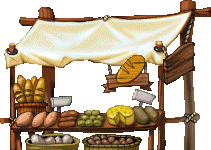
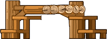
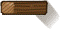
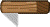
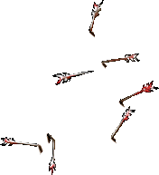
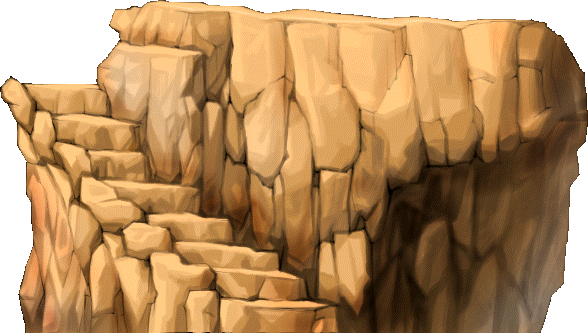
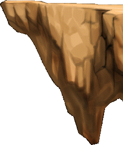
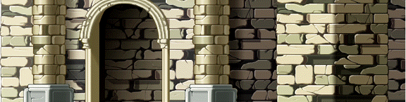
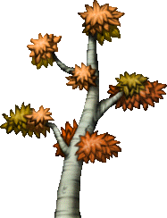

| grassySoil.nature.0.0 | |
| grassySoil.nature.0.0.origin | 65,18 |
| grassySoil.nature.0.0.z | 0 |
| grassySoil.nature.1.0 | |
| grassySoil.nature.1.0.origin | 27,17 |
| grassySoil.nature.1.0.z | 0 |
| grassySoil.nature.2.0 | |
| grassySoil.nature.2.0.origin | 28,17 |
| grassySoil.nature.2.0.z | 0 |
| grassySoil.nature.3.0 | |
| grassySoil.nature.3.0.origin | 23,22 |
| grassySoil.nature.3.0.z | 0 |
| grassySoil.nature.4.0 | |
| grassySoil.nature.4.0.origin | 21,21 |
| grassySoil.nature.4.0.z | 0 |
| grassySoil.nature.5.0 | |
| grassySoil.nature.5.0.origin | 23,33 |
| grassySoil.nature.5.0.z | 0 |
| grassySoil.nature.6.0 | |
| grassySoil.nature.6.0.origin | 28,26 |
| grassySoil.nature.6.0.z | 0 |
| grassySoil.nature.7.0 |  |
| grassySoil.nature.7.0.origin | 31,20 |
| grassySoil.nature.7.0.z | 0 |
| grassySoil.nature.8.0 | |
| grassySoil.nature.8.0.origin | 36,28 |
| grassySoil.nature.8.0.z | 0 |
| grassySoil.nature.9.0 |  |
| grassySoil.nature.9.0.origin | 30,31 |
| grassySoil.nature.9.0.z | 0 |
| grassySoil.nature.10.0 | |
| grassySoil.nature.10.0.origin | 41,30 |
| grassySoil.nature.10.0.z | 0 |
| grassySoil.nature.11.0 | |
| grassySoil.nature.11.0.origin | 66,147 |
| grassySoil.nature.11.0.z | 0 |
| grassySoil.nature.12.0 | |
| grassySoil.nature.12.0.origin | 60,143 |
| grassySoil.nature.12.0.z | 0 |
| grassySoil.nature.13.0 | |
| grassySoil.nature.13.0.origin | 111,60 |
| grassySoil.nature.13.0.z | 0 |
| grassySoil.nature.14.0 | |
| grassySoil.nature.14.0.origin | 48,41 |
| grassySoil.nature.14.0.z | 0 |
| grassySoil.nature.15.0 | |
| grassySoil.nature.15.0.origin | 145,119 |
| grassySoil.nature.15.0.z | 0 |
| grassySoil.nature.16.0 | |
| grassySoil.nature.16.0.origin | 100,52 |
| grassySoil.nature.16.0.z | 0 |
| grassySoil.nature.17.0 |  |
| grassySoil.nature.17.0.origin | 70,31 |
| grassySoil.nature.17.0.z | 0 |
| grassySoil.nature.18.0 | |
| grassySoil.nature.18.0.origin | 19,17 |
| grassySoil.nature.18.0.z | 0 |
| grassySoil.nature.19.0 |  |
| grassySoil.nature.19.0.origin | 16,8 |
| grassySoil.nature.19.0.z | 0 |
| grassySoil.nature.19.0.delay | 130 |
| grassySoil.nature.19.1 |  |
| grassySoil.nature.19.1.origin | 40,-7 |
| grassySoil.nature.19.1.z | 0 |
| grassySoil.nature.19.1.delay | 130 |
| grassySoil.nature.19.2 |  |
| grassySoil.nature.19.2.origin | 53,4 |
| grassySoil.nature.19.2.z | 0 |
| grassySoil.nature.19.2.delay | 130 |
| grassySoil.nature.19.3 | |
| grassySoil.nature.19.3.origin | 49,16 |
| grassySoil.nature.19.3.z | 0 |
| grassySoil.nature.19.3.delay | 130 |
| grassySoil.nature.19.4 | |
| grassySoil.nature.19.4.origin | 22,42 |
| grassySoil.nature.19.4.z | 0 |
| grassySoil.nature.19.4.delay | 130 |
| grassySoil.nature.19.5 | |
| grassySoil.nature.19.5.origin | 3,22 |
| grassySoil.nature.19.5.z | 0 |
| grassySoil.nature.19.5.delay | 130 |
| grassySoil.nature.19.6 | |
| grassySoil.nature.19.6.origin | -27,12 |
| grassySoil.nature.19.6.z | 0 |
| grassySoil.nature.19.6.delay | 130 |
| grassySoil.nature.19.7 |  |
| grassySoil.nature.19.7.origin | -47,17 |
| grassySoil.nature.19.7.z | 0 |
| grassySoil.nature.19.7.delay | 130 |
| grassySoil.nature.19.8 | |
| grassySoil.nature.19.8.origin | -10,-8 |
| grassySoil.nature.19.8.z | 0 |
| grassySoil.nature.19.8.delay | 130 |
| grassySoil.nature.20.0 | |
| grassySoil.nature.20.0.origin | 19,8 |
| grassySoil.nature.20.0.z | 0 |
| grassySoil.nature.20.0.delay | 200 |
| grassySoil.nature.20.1 | |
| grassySoil.nature.20.1.origin | 14,12 |
| grassySoil.nature.20.1.z | 0 |
| grassySoil.nature.20.1.delay | 200 |
| grassySoil.nature.20.2 | |
| grassySoil.nature.20.2.origin | 8,17 |
| grassySoil.nature.20.2.z | 0 |
| grassySoil.nature.20.2.delay | 200 |
| grassySoil.nature.20.3 | |
| grassySoil.nature.20.3.origin | 2,19 |
| grassySoil.nature.20.3.z | 0 |
| grassySoil.nature.20.3.delay | 200 |
| grassySoil.nature.20.4 | 2 |
| grassySoil.nature.20.5 | 1 |
| grassySoil.nature.21.0 | |
| grassySoil.nature.21.0.origin | 16,9 |
| grassySoil.nature.21.0.z | 0 |
| grassySoil.nature.21.0.delay | 130 |
| grassySoil.nature.21.1 |  |
| grassySoil.nature.21.1.origin | -18,-8 |
| grassySoil.nature.21.1.z | 0 |
| grassySoil.nature.21.1.delay | 130 |
| grassySoil.nature.21.2 |  |
| grassySoil.nature.21.2.origin | -50,-33 |
| grassySoil.nature.21.2.z | 0 |
| grassySoil.nature.21.2.delay | 130 |
| grassySoil.nature.21.3 | |
| grassySoil.nature.21.3.origin | -62,-14 |
| grassySoil.nature.21.3.z | 0 |
| grassySoil.nature.21.3.delay | 130 |
| grassySoil.nature.21.4 | |
| grassySoil.nature.21.4.origin | -56,5 |
| grassySoil.nature.21.4.z | 0 |
| grassySoil.nature.21.4.delay | 130 |
| grassySoil.nature.21.5 |  |
| grassySoil.nature.21.5.origin | -74,7 |
| grassySoil.nature.21.5.z | 0 |
| grassySoil.nature.21.5.delay | 130 |
| grassySoil.nature.21.6 |  |
| grassySoil.nature.21.6.origin | -74,-18 |
| grassySoil.nature.21.6.z | 0 |
| grassySoil.nature.21.6.delay | 130 |
| grassySoil.nature.21.7 | |
| grassySoil.nature.21.7.origin | -50,-33 |
| grassySoil.nature.21.7.z | 0 |
| grassySoil.nature.21.7.delay | 130 |
| grassySoil.nature.21.8 |  |
| grassySoil.nature.21.8.origin | -9,-22 |
| grassySoil.nature.21.8.z | 0 |
| grassySoil.nature.21.8.delay | 130 |
| grassySoil.nature.22.0 | |
| grassySoil.nature.22.0.origin | 20,33 |
| grassySoil.nature.22.0.z | 0 |
| grassySoil.nature.23.0 | |
| grassySoil.nature.23.0.origin | 31,44 |
| grassySoil.nature.23.0.z | 0 |
| grassySoil.nature.24.0 | |
| grassySoil.nature.24.0.origin | 25,38 |
| grassySoil.nature.24.0.z | 0 |
| grassySoil.nature.25.0 | |
| grassySoil.nature.25.0.origin | 66,91 |
| grassySoil.nature.25.0.z | 0 |
| grassySoil.nature.25.0.a0 | 0 |
| grassySoil.nature.25.0.a1 | 255 |
| grassySoil.nature.25.0.delay | 3000 |
| grassySoil.nature.25.1 |  |
| grassySoil.nature.25.1.origin | 66,91 |
| grassySoil.nature.25.1.z | 0 |
| grassySoil.nature.25.1.a0 | 255 |
| grassySoil.nature.25.1.a1 | 0 |
| grassySoil.nature.25.1.delay | 3000 |
| grassySoil.nature.26.0 |  |
| grassySoil.nature.26.0.origin | 60,78 |
| grassySoil.nature.26.0.z | 0 |
| grassySoil.nature.26.0.delay | 2100 |
| grassySoil.nature.26.0.a0 | 0 |
| grassySoil.nature.26.0.a1 | 255 |
| grassySoil.nature.26.1 | |
| grassySoil.nature.26.1.origin | 60,78 |
| grassySoil.nature.26.1.z | 0 |
| grassySoil.nature.26.1.delay | 2100 |
| grassySoil.nature.26.1.a0 | 255 |
| grassySoil.nature.26.1.a1 | 0 |
| grassySoil.nature.27.0 | |
| grassySoil.nature.27.0.origin | 168,13 |
| grassySoil.nature.27.0.z | 0 |
| grassySoil.artificiality.0.0 | |
| grassySoil.artificiality.0.0.origin | 32,58 |
| grassySoil.artificiality.0.0.z | 0 |
| grassySoil.artificiality.1.0 | |
| grassySoil.artificiality.1.0.origin | 27,32 |
| grassySoil.artificiality.1.0.z | 0 |
| grassySoil.artificiality.2.0 | |
| grassySoil.artificiality.2.0.origin | 117,28 |
| grassySoil.artificiality.2.0.z | 0 |
| grassySoil.artificiality.3.0 | |
| grassySoil.artificiality.3.0.origin | 84,29 |
| grassySoil.artificiality.3.0.z | 0 |
| grassySoil.artificiality.4.0 | |
| grassySoil.artificiality.4.0.origin | 88,63 |
| grassySoil.artificiality.4.0.z | 0 |
| grassySoil.artificiality.5.0 |  |
| grassySoil.artificiality.5.0.origin | 0,0 |
| grassySoil.artificiality.6.0 | |
| grassySoil.artificiality.6.0.origin | 66,30 |
| grassySoil.artificiality.6.0.z | 0 |
| grassySoil.artificiality.6.0.foothold.0 | -65,2 |
| grassySoil.artificiality.6.0.foothold.1 | 52,5 |
| grassySoil.artificiality.6.seat.0 | -36,24 |
| grassySoil.artificiality.6.seat.1 | 31,24 |
| grassySoil.artificiality.7.0 | |
| grassySoil.artificiality.7.0.origin | 60,30 |
| grassySoil.artificiality.7.0.z | 0 |
| grassySoil.artificiality.8.0 | |
| grassySoil.artificiality.8.0.origin | 54,38 |
| grassySoil.artificiality.8.0.z | 0 |
| grassySoil.artificiality.8.0.delay | 900 |
| grassySoil.artificiality.8.1 | |
| grassySoil.artificiality.8.1.origin | 54,38 |
| grassySoil.artificiality.8.1.z | 0 |
| grassySoil.artificiality.8.1.delay | 900 |
| grassySoil.artificiality.8.2 | 0 |
| grassySoil.artificiality.8.3 | 1 |
| grassySoil.artificiality.8.4 | 0 |
| grassySoil.artificiality.8.5 | 1 |
| grassySoil.artificiality.8.6 | |
| grassySoil.artificiality.8.6.origin | 54,38 |
| grassySoil.artificiality.8.6.z | 0 |
| grassySoil.artificiality.8.6.delay | 150 |
| grassySoil.artificiality.8.7 | |
| grassySoil.artificiality.8.7.origin | 54,38 |
| grassySoil.artificiality.8.7.z | 0 |
| grassySoil.artificiality.8.7.delay | 150 |
| grassySoil.artificiality.8.8 | 6 |
| grassySoil.artificiality.8.9 | 7 |
| grassySoil.artificiality.8.10 |  |
| grassySoil.artificiality.8.10.origin | 54,38 |
| grassySoil.artificiality.8.10.z | 0 |
| grassySoil.artificiality.8.10.delay | 1500 |
| grassySoil.artificiality.9.0 | |
| grassySoil.artificiality.9.0.origin | 76,44 |
| grassySoil.artificiality.9.0.z | 0 |
| grassySoil.artificiality.9.0.delay | 120 |
| grassySoil.artificiality.9.1 | |
| grassySoil.artificiality.9.1.origin | 76,44 |
| grassySoil.artificiality.9.1.z | 0 |
| grassySoil.artificiality.9.1.delay | 120 |
| grassySoil.artificiality.10.0 | |
| grassySoil.artificiality.10.0.origin | 26,26 |
| grassySoil.artificiality.10.0.z | 0 |
| grassySoil.artificiality.10.0.foothold.0 | -19,-26 |
| grassySoil.artificiality.10.0.foothold.1 | 18,-26 |
| grassySoil.artificiality.11.0 | |
| grassySoil.artificiality.11.0.origin | 32,26 |
| grassySoil.artificiality.11.0.z | 0 |
| grassySoil.artificiality.11.0.foothold.0 | -27,-19 |
| grassySoil.artificiality.11.0.foothold.1 | -15,-26 |
| grassySoil.artificiality.11.0.foothold.2 | 16,-26 |
| grassySoil.artificiality.11.0.foothold.3 | 26,-21 |
| grassySoil.artificiality.12.0 | |
| grassySoil.artificiality.12.0.origin | 36,68 |
| grassySoil.artificiality.12.0.z | 0 |
| grassySoil.artificiality.13.0 | |
| grassySoil.artificiality.13.0.origin | 36,68 |
| grassySoil.artificiality.13.0.z | 0 |
| grassySoil.artificiality.14.0 | |
| grassySoil.artificiality.14.0.origin | 20,42 |
| grassySoil.artificiality.14.0.z | 0 |
| grassySoil.artificiality.15.0 | |
| grassySoil.artificiality.15.0.origin | 21,44 |
| grassySoil.artificiality.15.0.z | 0 |
| grassySoil.artificiality.16.0 | |
| grassySoil.artificiality.16.0.origin | 24,27 |
| grassySoil.artificiality.16.0.z | 0 |
| grassySoil.artificiality.16.0.foothold.0 | -17,-27 |
| grassySoil.artificiality.16.0.foothold.1 | 19,-27 |
| grassySoil.artificiality.17.0 | |
| grassySoil.artificiality.17.0.origin | 25,27 |
| grassySoil.artificiality.17.0.z | 0 |
| grassySoil.artificiality.17.0.foothold.0 | -15,-27 |
| grassySoil.artificiality.17.0.foothold.1 | 21,-27 |
| grassySoil.artificiality.18.0 |  |
| grassySoil.artificiality.18.0.origin | 92,55 |
| grassySoil.artificiality.18.0.z | 0 |
| grassySoil.artificiality.18.0.foothold.0 | -59,-18 |
| grassySoil.artificiality.18.0.foothold.1 | -33,-14 |
| grassySoil.artificiality.18.0.foothold.2 | 54,-16 |
| grassySoil.artificiality.19.0 | |
| grassySoil.artificiality.19.0.origin | 19,26 |
| grassySoil.artificiality.19.0.z | 0 |
| grassySoil.artificiality.20.0 | |
| grassySoil.artificiality.20.0.origin | 33,23 |
| grassySoil.artificiality.20.0.z | 0 |
| grassySoil.artificiality.21.0 | |
| grassySoil.artificiality.21.0.origin | 231,40 |
| grassySoil.artificiality.21.0.z | 0 |
| grassySoil.artificiality.22.0 | |
| grassySoil.artificiality.22.0.origin | 221,32 |
| grassySoil.artificiality.22.0.z | 0 |
| grassySoil.artificiality.23.0 | |
| grassySoil.artificiality.23.0.origin | 24,24 |
| grassySoil.artificiality.23.0.z | 0 |
| grassySoil.artificiality.24.0 | |
| grassySoil.artificiality.24.0.origin | 24,22 |
| grassySoil.artificiality.24.0.z | 0 |
| grassySoil.artificiality.25.0 | |
| grassySoil.artificiality.25.0.origin | 21,46 |
| grassySoil.artificiality.25.0.z | 0 |
| grassySoil.artificiality.26.0 |  |
| grassySoil.artificiality.26.0.origin | 48,45 |
| grassySoil.artificiality.26.0.z | 0 |
| grassySoil.artificiality.27.0 | |
| grassySoil.artificiality.27.0.origin | 57,75 |
| grassySoil.artificiality.27.0.z | 0 |
| grassySoil.artificiality.28.0 | |
| grassySoil.artificiality.28.0.origin | 130,76 |
| grassySoil.artificiality.28.0.z | 0 |
| grassySoil.artificiality.29.0 | |
| grassySoil.artificiality.29.0.origin | 29,55 |
| grassySoil.artificiality.29.0.z | 0 |
| grassySoil.artificiality.30.0 |  |
| grassySoil.artificiality.30.0.origin | 18,14 |
| grassySoil.artificiality.30.0.z | 0 |
| grassySoil.artificiality.31.0 | |
| grassySoil.artificiality.31.0.origin | 44,13 |
| grassySoil.artificiality.31.0.z | 0 |
| grassySoil.artificiality.32.0 | |
| grassySoil.artificiality.32.0.origin | 387,209 |
| grassySoil.artificiality.32.0.z | 0 |
| grassySoil.artificiality.33.0 | |
| grassySoil.artificiality.33.0.origin | 103,70 |
| grassySoil.artificiality.33.0.z | 0 |
| grassySoil.artificiality.34.0 | |
| grassySoil.artificiality.34.0.origin | 52,70 |
| grassySoil.artificiality.34.0.z | 0 |
| grassySoil.artificiality.35.0 | |
| grassySoil.artificiality.35.0.origin | 37,14 |
| grassySoil.artificiality.35.0.z | 0 |
| grassySoil.artificiality.35.seat.0 | -18,14 |
| grassySoil.artificiality.35.seat.1 | 5,14 |
| grassySoil.artificiality.35.seat.2 | 26,14 |
| grassySoil.artificiality.36.0 |  |
| grassySoil.artificiality.36.0.origin | 0,0 |
| grassySoil.artificiality.37.0 |  |
| grassySoil.artificiality.37.0.origin | 0,0 |
| grassySoil.artificiality.38.0 |  |
| grassySoil.artificiality.38.0.origin | 0,0 |
| grassySoil.artificiality.39.0 |  |
| grassySoil.artificiality.39.0.origin | 389,310 |
| grassySoil.artificiality.39.0.z | 0 |
| grassySoil.artificiality.39.0.foothold.0.0 | 131,279 |
| grassySoil.artificiality.39.0.foothold.0.1 | 206,279 |
| grassySoil.artificiality.39.0.foothold.1.0 | -202,116 |
| grassySoil.artificiality.39.0.foothold.1.1 | -177,113 |
| grassySoil.artificiality.39.0.foothold.2.0 | -249,155 |
| grassySoil.artificiality.39.0.foothold.2.1 | -220,149 |
| grassySoil.artificiality.39.0.foothold.2.2 | -194,145 |
| grassySoil.artificiality.39.0.foothold.2.3 | -160,140 |
| grassySoil.artificiality.39.0.foothold.2.4 | -133,139 |
| grassySoil.artificiality.39.0.foothold.2.5 | -94,138 |
| grassySoil.artificiality.39.0.foothold.2.6 | -43,136 |
| grassySoil.artificiality.39.0.foothold.2.7 | -3,136 |
| grassySoil.artificiality.39.0.foothold.2.8 | 58,137 |
| grassySoil.artificiality.39.0.foothold.2.9 | 129,140 |
| grassySoil.artificiality.39.0.foothold.2.10 | 174,141 |
| grassySoil.artificiality.39.0.foothold.2.11 | 228,144 |
| grassySoil.artificiality.39.0.foothold.2.12 | 266,150 |
| grassySoil.artificiality.39.0.foothold.2.13 | 295,156 |
| grassySoil.artificiality.39.0.foothold.3.0 | 247,125 |
| grassySoil.artificiality.39.0.foothold.3.1 | 279,127 |
| grassySoil.artificiality.39.0.foothold.4.0 | 146,106 |
| grassySoil.artificiality.39.0.foothold.4.1 | 177,107 |
| grassySoil.artificiality.39.0.foothold.5.0 | 25,51 |
| grassySoil.artificiality.39.0.foothold.5.1 | 57,40 |
| grassySoil.artificiality.39.0.foothold.5.2 | 77,39 |
| grassySoil.artificiality.39.0.foothold.5.3 | 103,39 |
| grassySoil.artificiality.39.0.foothold.5.4 | 119,45 |
| grassySoil.artificiality.39.0.foothold.5.5 | 136,54 |
| grassySoil.artificiality.39.0.foothold.5.6 | 144,62 |
| grassySoil.artificiality.39.0.foothold.6.0 | 112,-10 |
| grassySoil.artificiality.39.0.foothold.6.1 | 254,-69 |
| grassySoil.artificiality.39.0.foothold.7.0 | -76,54 |
| grassySoil.artificiality.39.0.foothold.7.1 | -22,49 |
| grassySoil.artificiality.39.0.foothold.8.0 | -108,8 |
| grassySoil.artificiality.39.0.foothold.8.1 | -33,-4 |
| grassySoil.artificiality.39.0.foothold.9.0 | -176,-79 |
| grassySoil.artificiality.39.0.foothold.9.1 | -147,-104 |
| grassySoil.artificiality.39.0.foothold.9.2 | -121,-113 |
| grassySoil.artificiality.39.0.foothold.9.3 | -78,-132 |
| grassySoil.artificiality.39.0.foothold.9.4 | -34,-132 |
| grassySoil.artificiality.39.0.foothold.9.5 | -9,-133 |
| grassySoil.artificiality.39.0.foothold.9.6 | 28,-116 |
| grassySoil.artificiality.39.0.foothold.9.7 | 52,-106 |
| grassySoil.artificiality.39.0.foothold.9.8 | 72,-98 |
| grassySoil.artificiality.39.0.foothold.9.9 | 100,-86 |
| grassySoil.artificiality.39.0.foothold.9.10 | 125,-73 |
| grassySoil.artificiality.39.0.foothold.9.11 | 148,-68 |
| grassySoil.artificiality.39.0.foothold.9.12 | 191,-62 |
| grassySoil.artificiality.39.0.foothold.9.13 | 218,-67 |
| grassySoil.artificiality.40.0 | |
| grassySoil.artificiality.40.0.origin | 45,32 |
| grassySoil.artificiality.40.0.z | 0 |
| grassySoil.artificiality.41.0 |  |
| grassySoil.artificiality.41.0.origin | 0,0 |
| grassySoil.artificiality.41.0.foothold.0 | -8,2 |
| grassySoil.artificiality.41.0.foothold.1 | 16,2 |
| grassySoil.market.0.0 | |
| grassySoil.market.0.0.origin | 107,75 |
| grassySoil.market.0.0.z | 0 |
| grassySoil.market.0.foothold.0 | -69,-53 |
| grassySoil.market.0.foothold.1 | -59,-49 |
| grassySoil.market.0.foothold.2 | -51,-46 |
| grassySoil.market.0.foothold.3 | -45,-42 |
| grassySoil.market.0.foothold.4 | -33,-46 |
| grassySoil.market.0.foothold.5 | -23,-50 |
| grassySoil.market.0.foothold.6 | -13,-51 |
| grassySoil.market.0.foothold.7 | -6,-53 |
| grassySoil.market.0.foothold.8 | 10,-51 |
| grassySoil.market.0.foothold.9 | 18,-48 |
| grassySoil.market.0.foothold.10 | 27,-44 |
| grassySoil.market.0.foothold.11 | 30,-42 |
| grassySoil.market.0.foothold.12 | 41,-45 |
| grassySoil.market.0.foothold.13 | 50,-48 |
| grassySoil.market.0.foothold.14 | 57,-51 |
| grassySoil.market.0.foothold.15 | 67,-54 |
| grassySoil.market.0.foothold.16 | 74,-57 |
| grassySoil.market.0.foothold.17 | 81,-59 |
| grassySoil.market.1.0 | |
| grassySoil.market.1.0.origin | 107,75 |
| grassySoil.market.1.0.z | 0 |
| grassySoil.market.1.foothold.0 | -69,-53 |
| grassySoil.market.1.foothold.1 | -59,-49 |
| grassySoil.market.1.foothold.2 | -51,-46 |
| grassySoil.market.1.foothold.3 | -45,-42 |
| grassySoil.market.1.foothold.4 | -33,-46 |
| grassySoil.market.1.foothold.5 | -23,-50 |
| grassySoil.market.1.foothold.6 | -13,-51 |
| grassySoil.market.1.foothold.7 | -6,-53 |
| grassySoil.market.1.foothold.8 | 10,-51 |
| grassySoil.market.1.foothold.9 | 18,-48 |
| grassySoil.market.1.foothold.10 | 27,-44 |
| grassySoil.market.1.foothold.11 | 30,-42 |
| grassySoil.market.1.foothold.12 | 41,-45 |
| grassySoil.market.1.foothold.13 | 50,-48 |
| grassySoil.market.1.foothold.14 | 57,-51 |
| grassySoil.market.1.foothold.15 | 67,-54 |
| grassySoil.market.1.foothold.16 | 74,-57 |
| grassySoil.market.1.foothold.17 | 81,-59 |
| grassySoil.market.2.0 | |
| grassySoil.market.2.0.origin | 107,75 |
| grassySoil.market.2.0.z | 0 |
| grassySoil.market.2.foothold.0 | -69,-53 |
| grassySoil.market.2.foothold.1 | -59,-49 |
| grassySoil.market.2.foothold.2 | -51,-46 |
| grassySoil.market.2.foothold.3 | -45,-42 |
| grassySoil.market.2.foothold.4 | -33,-46 |
| grassySoil.market.2.foothold.5 | -23,-50 |
| grassySoil.market.2.foothold.6 | -13,-51 |
| grassySoil.market.2.foothold.7 | -6,-53 |
| grassySoil.market.2.foothold.8 | 10,-51 |
| grassySoil.market.2.foothold.9 | 18,-48 |
| grassySoil.market.2.foothold.10 | 27,-44 |
| grassySoil.market.2.foothold.11 | 30,-42 |
| grassySoil.market.2.foothold.12 | 41,-45 |
| grassySoil.market.2.foothold.13 | 50,-48 |
| grassySoil.market.2.foothold.14 | 57,-51 |
| grassySoil.market.2.foothold.15 | 67,-54 |
| grassySoil.market.2.foothold.16 | 74,-57 |
| grassySoil.market.2.foothold.17 | 81,-59 |
| grassySoil.market.3.0 | |
| grassySoil.market.3.0.origin | 73,14 |
| grassySoil.market.3.0.z | 0 |
| grassySoil.market.4.0 | |
| grassySoil.market.4.0.origin | 92,92 |
| grassySoil.market.4.0.z | 0 |
| grassySoil.market.5.0 | |
| grassySoil.market.5.0.origin | 92,92 |
| grassySoil.market.5.0.z | 0 |
| grassySoil.market.6.0 | |
| grassySoil.market.6.0.origin | 92,92 |
| grassySoil.market.6.0.z | 0 |
| grassySoil.market.7.0 | |
| grassySoil.market.7.0.origin | 12,92 |
| grassySoil.market.7.0.z | 0 |
| grassySoil.market.8.0 | |
| grassySoil.market.8.0.origin | 117,75 |
| grassySoil.market.8.0.z | 0 |
| grassySoil.market.8.foothold.0 | -69,-53 |
| grassySoil.market.8.foothold.1 | -59,-49 |
| grassySoil.market.8.foothold.2 | -51,-46 |
| grassySoil.market.8.foothold.3 | -45,-42 |
| grassySoil.market.8.foothold.4 | -33,-46 |
| grassySoil.market.8.foothold.5 | -23,-50 |
| grassySoil.market.8.foothold.6 | -13,-51 |
| grassySoil.market.8.foothold.7 | -6,-53 |
| grassySoil.market.8.foothold.8 | 10,-51 |
| grassySoil.market.8.foothold.9 | 18,-48 |
| grassySoil.market.8.foothold.10 | 27,-44 |
| grassySoil.market.8.foothold.11 | 30,-42 |
| grassySoil.market.8.foothold.12 | 41,-45 |
| grassySoil.market.8.foothold.13 | 50,-48 |
| grassySoil.market.8.foothold.14 | 57,-51 |
| grassySoil.market.8.foothold.15 | 67,-54 |
| grassySoil.market.8.foothold.16 | 74,-57 |
| grassySoil.market.8.foothold.17 | 81,-59 |
| grassySoil.market.9.0 | |
| grassySoil.market.9.0.origin | 118,75 |
| grassySoil.market.9.0.z | 0 |
| grassySoil.market.9.foothold.0 | -69,-53 |
| grassySoil.market.9.foothold.1 | -59,-49 |
| grassySoil.market.9.foothold.2 | -51,-46 |
| grassySoil.market.9.foothold.3 | -45,-42 |
| grassySoil.market.9.foothold.4 | -33,-46 |
| grassySoil.market.9.foothold.5 | -23,-50 |
| grassySoil.market.9.foothold.6 | -13,-51 |
| grassySoil.market.9.foothold.7 | -6,-53 |
| grassySoil.market.9.foothold.8 | 10,-51 |
| grassySoil.market.9.foothold.9 | 18,-48 |
| grassySoil.market.9.foothold.10 | 27,-44 |
| grassySoil.market.9.foothold.11 | 30,-42 |
| grassySoil.market.9.foothold.12 | 41,-45 |
| grassySoil.market.9.foothold.13 | 50,-48 |
| grassySoil.market.9.foothold.14 | 57,-51 |
| grassySoil.market.9.foothold.15 | 67,-54 |
| grassySoil.market.9.foothold.16 | 74,-57 |
| grassySoil.market.9.foothold.17 | 81,-59 |
| grassySoil.market.10.0 |  |
| grassySoil.market.10.0.origin | 105,75 |
| grassySoil.market.10.0.z | 0 |
| grassySoil.market.10.foothold.0 | -69,-53 |
| grassySoil.market.10.foothold.1 | -59,-49 |
| grassySoil.market.10.foothold.2 | -51,-46 |
| grassySoil.market.10.foothold.3 | -45,-42 |
| grassySoil.market.10.foothold.4 | -33,-46 |
| grassySoil.market.10.foothold.5 | -23,-50 |
| grassySoil.market.10.foothold.6 | -13,-51 |
| grassySoil.market.10.foothold.7 | -6,-53 |
| grassySoil.market.10.foothold.8 | 10,-51 |
| grassySoil.market.10.foothold.9 | 18,-48 |
| grassySoil.market.10.foothold.10 | 27,-44 |
| grassySoil.market.10.foothold.11 | 30,-42 |
| grassySoil.market.10.foothold.12 | 41,-45 |
| grassySoil.market.10.foothold.13 | 50,-48 |
| grassySoil.market.10.foothold.14 | 57,-51 |
| grassySoil.market.10.foothold.15 | 67,-54 |
| grassySoil.market.10.foothold.16 | 74,-57 |
| grassySoil.market.10.foothold.17 | 81,-59 |
| grassySoil.market.11.0 | |
| grassySoil.market.11.0.origin | 138,75 |
| grassySoil.market.11.0.z | 0 |
| grassySoil.market.11.foothold.0 | -69,-53 |
| grassySoil.market.11.foothold.1 | -59,-49 |
| grassySoil.market.11.foothold.2 | -51,-46 |
| grassySoil.market.11.foothold.3 | -45,-42 |
| grassySoil.market.11.foothold.4 | -33,-46 |
| grassySoil.market.11.foothold.5 | -23,-50 |
| grassySoil.market.11.foothold.6 | -13,-51 |
| grassySoil.market.11.foothold.7 | -6,-53 |
| grassySoil.market.11.foothold.8 | 10,-51 |
| grassySoil.market.11.foothold.9 | 18,-48 |
| grassySoil.market.11.foothold.10 | 27,-44 |
| grassySoil.market.11.foothold.11 | 30,-42 |
| grassySoil.market.11.foothold.12 | 41,-45 |
| grassySoil.market.11.foothold.13 | 50,-48 |
| grassySoil.market.11.foothold.14 | 57,-51 |
| grassySoil.market.11.foothold.15 | 67,-54 |
| grassySoil.market.11.foothold.16 | 74,-57 |
| grassySoil.market.11.foothold.17 | 81,-59 |
| grassySoil.market.12.0 | |
| grassySoil.market.12.0.origin | 134,69 |
| grassySoil.market.12.0.z | 0 |
| grassySoil.market.13.0 | |
| grassySoil.market.13.0.origin | 131,45 |
| grassySoil.market.13.0.z | 0 |
| grassySoil.market.13.0.foothold.0 | -71,-35 |
| grassySoil.market.13.0.foothold.1 | -43,-31 |
| grassySoil.market.13.0.foothold.2 | -23,-30 |
| grassySoil.market.13.0.foothold.3 | 0,-30 |
| grassySoil.market.13.0.foothold.4 | 24,-31 |
| grassySoil.market.13.0.foothold.5 | 48,-34 |
| grassySoil.market.14.0 | |
| grassySoil.market.14.0.origin | 89,54 |
| grassySoil.market.14.0.z | 0 |
| grassySoil.market.15.0 | |
| grassySoil.market.15.0.origin | 123,90 |
| grassySoil.market.15.0.z | 0 |
| grassySoil.market.15.0.foothold.0 | -98,-78 |
| grassySoil.market.15.0.foothold.1 | -83,-78 |
| grassySoil.market.15.0.foothold.2 | -77,-85 |
| grassySoil.market.15.0.foothold.3 | -27,-85 |
| grassySoil.market.15.0.foothold.4 | -23,-85 |
| grassySoil.market.15.0.foothold.5 | -16,-84 |
| grassySoil.market.15.0.foothold.6 | 21,-85 |
| grassySoil.market.15.0.foothold.7 | 27,-87 |
| grassySoil.market.15.0.foothold.8 | 32,-85 |
| grassySoil.market.15.0.foothold.9 | 81,-84 |
| grassySoil.market.15.0.foothold.10 | 86,-78 |
| grassySoil.market.15.0.foothold.11 | 105,-76 |
| grassySoil.market.16.0 |  |
| grassySoil.market.16.0.origin | 103,62 |
| grassySoil.market.16.0.z | 0 |
| grassySoil.market.16.0.foothold.0.0 | -101,0 |
| grassySoil.market.16.0.foothold.0.1 | 98,0 |
| grassySoil.market.16.0.foothold.1.0 | -48,-55 |
| grassySoil.market.16.0.foothold.1.1 | 63,-55 |
| grassySoil.market.17.0 | |
| grassySoil.market.17.0.origin | 75,43 |
| grassySoil.market.17.0.z | 0 |
| grassySoil.market.17.0.foothold.0.0 | -75,1 |
| grassySoil.market.17.0.foothold.0.1 | 76,1 |
| grassySoil.market.17.0.foothold.1.0 | -47,-42 |
| grassySoil.market.17.0.foothold.1.1 | 10,-42 |
| grassySoil.market.18.0 | |
| grassySoil.market.18.0.origin | 29,21 |
| grassySoil.market.18.0.z | 0 |
| grassySoil.market.18.0.foothold.0 | -29,-19 |
| grassySoil.market.18.0.foothold.1 | 30,-19 |
| grassySoil.market.19.0 | |
| grassySoil.market.19.0.origin | 54,35 |
| grassySoil.market.19.0.z | 0 |
| grassySoil.market.19.0.foothold.0 | -50,-27 |
| grassySoil.market.19.0.foothold.1 | -39,-29 |
| grassySoil.market.19.0.foothold.2 | -25,-30 |
| grassySoil.market.19.0.foothold.3 | -20,-27 |
| grassySoil.market.19.0.foothold.4 | -12,-28 |
| grassySoil.market.19.0.foothold.5 | 13,-28 |
| grassySoil.market.19.0.foothold.6 | 21,-27 |
| grassySoil.market.19.0.foothold.7 | 28,-30 |
| grassySoil.market.19.0.foothold.8 | 42,-31 |
| grassySoil.market.19.0.foothold.9 | 50,-24 |
| grassySoil.market.20.0 | |
| grassySoil.market.20.0.origin | 70,57 |
| grassySoil.market.20.0.z | 0 |
| grassySoil.market.21.0 | |
| grassySoil.market.21.0.origin | 22,29 |
| grassySoil.market.21.0.z | 0 |
| grassySoil.market.22.0 | |
| grassySoil.market.22.0.origin | 46,30 |
| grassySoil.market.22.0.z | 0 |
| grassySoil.market.23.0 | |
| grassySoil.market.23.0.origin | 19,29 |
| grassySoil.market.23.0.z | 0 |
| grassySoil.market.24.0 | |
| grassySoil.market.24.0.origin | 88,37 |
| grassySoil.market.24.0.z | 0 |
| grassySoil.market.25.0 | |
| grassySoil.market.25.0.origin | 25,20 |
| grassySoil.market.25.0.z | 0 |
| grassySoil.market.26.0 | |
| grassySoil.market.26.0.origin | 88,37 |
| grassySoil.market.26.0.z | 0 |
| grassySoil.market.27.0 | |
| grassySoil.market.27.0.origin | 43,34 |
| grassySoil.market.27.0.z | 0 |
| grassySoil.market.28.0 | |
| grassySoil.market.28.0.origin | 131,92 |
| grassySoil.market.28.0.z | 0 |
| grassySoil.market.28.0.foothold.0 | 24,-37 |
| grassySoil.market.28.0.foothold.1 | 112,-37 |
| grassySoil.market.29.0 | |
| grassySoil.market.29.0.origin | 28,15 |
| grassySoil.market.29.0.z | 0 |
| grassySoil.market.30.0 | |
| grassySoil.market.30.0.origin | 13,25 |
| grassySoil.market.30.0.z | 0 |
| grassySoil.market.31.0 | |
| grassySoil.market.31.0.origin | 14,14 |
| grassySoil.market.31.0.z | 0 |
| grassySoil.market.32.0 | |
| grassySoil.market.32.0.origin | 22,30 |
| grassySoil.market.32.0.z | 0 |
| grassySoil.market.33.0 | |
| grassySoil.market.33.0.origin | 25,30 |
| grassySoil.market.33.0.z | 0 |
| grassySoil.market.34.0 | |
| grassySoil.market.34.0.origin | 14,35 |
| grassySoil.market.34.0.z | 0 |
| grassySoil.market.35.0 | |
| grassySoil.market.35.0.origin | 25,28 |
| grassySoil.market.35.0.z | 0 |
| grassySoil.market.36.0 | |
| grassySoil.market.36.0.origin | 27,19 |
| grassySoil.market.36.0.z | 0 |
| grassySoil.market.37.0 | |
| grassySoil.market.37.0.origin | 18,25 |
| grassySoil.market.37.0.z | 0 |
| grassySoil.market.38.0 | |
| grassySoil.market.38.0.origin | 36,22 |
| grassySoil.market.38.0.z | 0 |
| grassySoil.market.39.0 | |
| grassySoil.market.39.0.origin | 16,31 |
| grassySoil.market.39.0.z | 0 |
| grassySoil.market.40.0 | |
| grassySoil.market.40.0.origin | 21,28 |
| grassySoil.market.40.0.z | 0 |
| grassySoil.market.41.0 | |
| grassySoil.market.41.0.origin | 31,15 |
| grassySoil.market.41.0.z | 0 |
| grassySoil.market.41.0.foothold.0 | -26,-11 |
| grassySoil.market.41.0.foothold.1 | -12,-11 |
| grassySoil.market.41.0.foothold.2 | -10,-13 |
| grassySoil.market.41.0.foothold.3 | 22,-13 |
| grassySoil.market.42.0 | |
| grassySoil.market.42.0.origin | 18,39 |
| grassySoil.market.42.0.z | 0 |
| grassySoil.market.43.0 | |
| grassySoil.market.43.0.origin | 21,35 |
| grassySoil.market.43.0.z | 0 |
| grassySoil.market.44.0 | |
| grassySoil.market.44.0.origin | 12,35 |
| grassySoil.market.44.0.z | 0 |
| grassySoil.market.45.0 | |
| grassySoil.market.45.0.origin | 27,12 |
| grassySoil.market.45.0.z | 0 |
| grassySoil.market.46.0 | |
| grassySoil.market.46.0.origin | 40,14 |
| grassySoil.market.46.0.z | 0 |
| grassySoil.market.47.0 | |
| grassySoil.market.47.0.origin | 11,18 |
| grassySoil.market.47.0.z | 0 |
| grassySoil.market.48.0 | |
| grassySoil.market.48.0.origin | 27,22 |
| grassySoil.market.48.0.z | 0 |
| grassySoil.market.49.0 | |
| grassySoil.market.49.0.origin | 28,17 |
| grassySoil.market.49.0.z | 0 |
| grassySoil.market.49.0.foothold.0 | -28,-16 |
| grassySoil.market.49.0.foothold.1 | 28,-16 |
| grassySoil.market.50.0 | |
| grassySoil.market.50.0.origin | 28,17 |
| grassySoil.market.50.0.z | 0 |
| grassySoil.market.50.0.foothold.0 | -28,-16 |
| grassySoil.market.50.0.foothold.1 | 29,-16 |
| grassySoil.market.51.0 | |
| grassySoil.market.51.0.origin | 157,170 |
| grassySoil.market.51.0.z | 0 |
| grassySoil.market.52.0 | |
| grassySoil.market.52.0.origin | 127,70 |
| grassySoil.market.52.0.z | 0 |
| grassySoil.market.53.0 | |
| grassySoil.market.53.0.origin | 18,19 |
| grassySoil.market.53.0.z | 0 |
| grassySoil.market.53.0.delay | 1100 |
| grassySoil.market.53.1 | |
| grassySoil.market.53.1.origin | 18,19 |
| grassySoil.market.53.1.z | 0 |
| grassySoil.market.53.1.delay | 150 |
| grassySoil.market.53.2 | |
| grassySoil.market.53.2.origin | 18,19 |
| grassySoil.market.53.2.z | 0 |
| grassySoil.market.53.2.delay | 150 |
| grassySoil.market.54.0 |  |
| grassySoil.market.54.0.origin | 14,16 |
| grassySoil.market.54.0.z | 0 |
| grassySoil.market.54.0.delay | 500 |
| grassySoil.market.54.1 | |
| grassySoil.market.54.1.origin | 14,16 |
| grassySoil.market.54.1.z | 0 |
| grassySoil.market.54.1.delay | 800 |
| grassySoil.market.54.2 | |
| grassySoil.market.54.2.origin | 14,16 |
| grassySoil.market.54.2.z | 0 |
| grassySoil.market.54.2.delay | 400 |
| grassySoil.market.54.3 |  |
| grassySoil.market.54.3.origin | 14,16 |
| grassySoil.market.54.3.z | 0 |
| grassySoil.market.54.3.delay | 850 |
| grassySoil.market.54.4 |  |
| grassySoil.market.54.4.origin | 14,16 |
| grassySoil.market.54.4.z | 0 |
| grassySoil.market.54.4.delay | 1000 |
| grassySoil.market.54.5 | |
| grassySoil.market.54.5.origin | 14,12 |
| grassySoil.market.54.5.z | 0 |
| grassySoil.market.54.5.delay | 100 |
| grassySoil.market.54.6 | |
| grassySoil.market.54.6.origin | 14,16 |
| grassySoil.market.54.6.z | 0 |
| grassySoil.market.54.6.delay | 150 |
| grassySoil.market.54.7 |  |
| grassySoil.market.54.7.origin | 14,12 |
| grassySoil.market.54.7.z | 0 |
| grassySoil.market.54.7.delay | 100 |
| grassySoil.market.54.8 |  |
| grassySoil.market.54.8.origin | 14,16 |
| grassySoil.market.54.8.z | 0 |
| grassySoil.market.54.8.delay | 1500 |
| grassySoil.market.55.0 |  |
| grassySoil.market.55.0.origin | 224,157 |
| grassySoil.market.55.0.z | 0 |
| grassySoil.market.56.0 | |
| grassySoil.market.56.0.origin | 128,70 |
| grassySoil.market.56.0.z | 0 |
| grassySoil.space.0.0 | |
| grassySoil.space.0.0.origin | 0,0 |
| grassySoil.space.1.0 |  |
| grassySoil.space.1.0.origin | 0,0 |
| grassySoil.space.2.0 |  |
| grassySoil.space.2.0.origin | 0,0 |
| grassySoil.space.3.0 | |
| grassySoil.space.3.0.origin | 38,12 |
| grassySoil.space.3.0.z | 0 |
| grassySoil.space.4.0 | |
| grassySoil.space.4.0.origin | 38,12 |
| grassySoil.space.4.0.z | 0 |
| grassySoil.space.5.0 | |
| grassySoil.space.5.0.origin | 27,58 |
| grassySoil.space.5.0.z | 0 |
| grassySoil.space.6.0 | |
| grassySoil.space.6.0.origin | 78,76 |
| grassySoil.space.6.0.z | 0 |
| grassySoil.space.7.0 | |
| grassySoil.space.7.0.origin | 31,63 |
| grassySoil.space.7.0.z | 0 |
| grassySoil.space.8.0 | |
| grassySoil.space.8.0.origin | 78,69 |
| grassySoil.space.8.0.z | 0 |
| grassySoil.space.9.0 | |
| grassySoil.space.9.0.origin | 98,122 |
| grassySoil.space.9.0.z | 0 |
| grassySoil.space.10.0 | |
| grassySoil.space.10.0.origin | 32,77 |
| grassySoil.space.10.0.z | 0 |
| grassySoil.space.11.0 | |
| grassySoil.space.11.0.origin | 32,77 |
| grassySoil.space.11.0.z | 0 |
| grassySoil.space.12.0 | |
| grassySoil.space.12.0.origin | 41,19 |
| grassySoil.space.12.0.z | 0 |
| grassySoil.space.12.0.delay | 300 |
| grassySoil.space.13.0 | |
| grassySoil.space.13.0.origin | 156,98 |
| grassySoil.space.13.0.z | 0 |
| grassySoil.space.14.0 | |
| grassySoil.space.14.0.origin | 66,12 |
| grassySoil.space.14.0.z | 0 |
| grassySoil.space.15.0 |  |
| grassySoil.space.15.0.origin | 67,12 |
| grassySoil.space.15.0.z | 0 |
| grassySoil.space.16.0 | |
| grassySoil.space.16.0.origin | 156,12 |
| grassySoil.space.16.0.z | 0 |
| grassySoil.space.16.0.foothold.0 | -155,-9 |
| grassySoil.space.16.0.foothold.1 | -146,-11 |
| grassySoil.space.16.0.foothold.2 | 150,-11 |
| grassySoil.space.16.0.foothold.3 | 157,-5 |
| grassySoil.space.17.0 | |
| grassySoil.space.17.0.origin | 117,86 |
| grassySoil.space.17.0.z | 0 |
| grassySoil.space.17.0.delay | 150 |
| grassySoil.space.17.1 | |
| grassySoil.space.17.1.origin | 117,86 |
| grassySoil.space.17.1.z | 0 |
| grassySoil.space.17.1.delay | 150 |
| grassySoil.space.17.2 | |
| grassySoil.space.17.2.origin | 117,86 |
| grassySoil.space.17.2.z | 0 |
| grassySoil.space.17.2.delay | 150 |
| grassySoil.space.18.0 | |
| grassySoil.space.18.0.origin | 45,19 |
| grassySoil.space.18.0.z | 0 |
| grassySoil.space.18.0.delay | 3000 |
| grassySoil.space.18.0.a0 | 0 |
| grassySoil.space.18.0.a1 | 170 |
| grassySoil.space.18.1 |  |
| grassySoil.space.18.1.origin | 45,19 |
| grassySoil.space.18.1.z | 0 |
| grassySoil.space.18.1.delay | 3000 |
| grassySoil.space.18.1.a0 | 170 |
| grassySoil.space.18.1.a1 | 0 |
| grassySoil.space.18.blend | 1 |
| grassySoil.space.19.0 | |
| grassySoil.space.19.0.origin | 27,25 |
| grassySoil.space.19.0.z | 0 |
| grassySoil.space.19.0.foothold.0 | -22,-24 |
| grassySoil.space.19.0.foothold.1 | 19,-24 |
| grassySoil.space.20.0 | |
| grassySoil.space.20.0.origin | 180,119 |
| grassySoil.space.20.0.z | 0 |
| grassySoil.space.21.0 | |
| grassySoil.space.21.0.origin | 38,76 |
| grassySoil.space.21.0.z | 0 |
| grassySoil.space.22.0 |  |
| grassySoil.space.22.0.origin | 45,84 |
| grassySoil.space.22.0.z | 1 |
| grassySoil.space.22.0.delay | 3500 |
| grassySoil.space.22.0.a0 | 0 |
| grassySoil.space.22.0.a1 | 160 |
| grassySoil.space.22.1 | |
| grassySoil.space.22.1.origin | 45,84 |
| grassySoil.space.22.1.z | 1 |
| grassySoil.space.22.1.delay | 3500 |
| grassySoil.space.22.1.a0 | 160 |
| grassySoil.space.22.1.a1 | 0 |
| grassySoil.space.22.blend | 1 |
| grassySoil.golem.0.0 | |
| grassySoil.golem.0.0.origin | 239,94 |
| grassySoil.golem.0.0.z | 0 |
| grassySoil.golem.0.0.foothold.0 | -230,-82 |
| grassySoil.golem.0.0.foothold.1 | -218,-90 |
| grassySoil.golem.0.0.foothold.2 | -163,-90 |
| grassySoil.golem.0.0.foothold.3 | -152,-88 |
| grassySoil.golem.0.0.foothold.4 | 29,-88 |
| grassySoil.golem.0.0.foothold.5 | 43,-91 |
| grassySoil.golem.0.0.foothold.6 | 109,-91 |
| grassySoil.golem.0.0.foothold.7 | 125,-87 |
| grassySoil.golem.0.0.foothold.8 | 174,-87 |
| grassySoil.golem.0.0.foothold.9 | 186,-90 |
| grassySoil.golem.0.0.foothold.10 | 229,-90 |
| grassySoil.golem.0.0.foothold.11 | 238,-87 |
| grassySoil.golem.1.0 | |
| grassySoil.golem.1.0.origin | 239,93 |
| grassySoil.golem.1.0.z | 0 |
| grassySoil.golem.1.0.foothold.0 | -235,-90 |
| grassySoil.golem.1.0.foothold.1 | -165,-90 |
| grassySoil.golem.1.0.foothold.2 | -138,-87 |
| grassySoil.golem.1.0.foothold.3 | 26,-87 |
| grassySoil.golem.1.0.foothold.4 | 42,-90 |
| grassySoil.golem.1.0.foothold.5 | 105,-90 |
| grassySoil.golem.1.0.foothold.6 | 118,-87 |
| grassySoil.golem.1.0.foothold.7 | 157,-87 |
| grassySoil.golem.1.0.foothold.8 | 170,-91 |
| grassySoil.golem.1.0.foothold.9 | 218,-91 |
| grassySoil.golem.1.0.foothold.10 | 232,-87 |
| grassySoil.golem.2.0 | |
| grassySoil.golem.2.0.origin | 217,73 |
| grassySoil.golem.2.0.z | 0 |
| grassySoil.golem.2.0.foothold.0 | -212,-61 |
| grassySoil.golem.2.0.foothold.1 | -198,-69 |
| grassySoil.golem.2.0.foothold.2 | -145,-69 |
| grassySoil.golem.2.0.foothold.3 | -135,-66 |
| grassySoil.golem.2.0.foothold.4 | 3,-67 |
| grassySoil.golem.2.0.foothold.5 | 22,-70 |
| grassySoil.golem.2.0.foothold.6 | 81,-71 |
| grassySoil.golem.2.0.foothold.7 | 99,-66 |
| grassySoil.golem.2.0.foothold.8 | 154,-65 |
| grassySoil.golem.2.0.foothold.9 | 168,-69 |
| grassySoil.golem.2.0.foothold.10 | 203,-70 |
| grassySoil.golem.2.0.foothold.11 | 215,-66 |
| grassySoil.golem.3.0 | |
| grassySoil.golem.3.0.origin | 238,93 |
| grassySoil.golem.3.0.z | 0 |
| grassySoil.golem.3.0.foothold.0 | -232,-90 |
| grassySoil.golem.3.0.foothold.1 | -149,-90 |
| grassySoil.golem.3.0.foothold.2 | -138,-88 |
| grassySoil.golem.3.0.foothold.3 | 19,-88 |
| grassySoil.golem.3.0.foothold.4 | 37,-91 |
| grassySoil.golem.3.0.foothold.5 | 104,-91 |
| grassySoil.golem.3.0.foothold.6 | 119,-88 |
| grassySoil.golem.3.0.foothold.7 | 176,-88 |
| grassySoil.golem.3.0.foothold.8 | 190,-90 |
| grassySoil.golem.3.0.foothold.9 | 223,-91 |
| grassySoil.golem.3.0.foothold.10 | 234,-86 |
| grassySoil.golem.4.0 | |
| grassySoil.golem.4.0.origin | 63,77 |
| grassySoil.golem.4.0.z | 0 |
| grassySoil.golem.5.0 | |
| grassySoil.golem.5.0.origin | 77,75 |
| grassySoil.golem.5.0.z | 0 |
| grassySoil.golem.6.0 | |
| grassySoil.golem.6.0.origin | 76,75 |
| grassySoil.golem.6.0.z | 0 |
| grassySoil.golem.7.0 | |
| grassySoil.golem.7.0.origin | 88,75 |
| grassySoil.golem.7.0.z | 0 |
| grassySoil.golem.8.0 | |
| grassySoil.golem.8.0.origin | 201,51 |
| grassySoil.golem.8.0.z | 0 |
| grassySoil.golem.8.0.foothold.0 | -196,-47 |
| grassySoil.golem.8.0.foothold.1 | -125,-47 |
| grassySoil.golem.8.0.foothold.2 | -97,-45 |
| grassySoil.golem.8.0.foothold.3 | -9,-45 |
| grassySoil.golem.8.0.foothold.4 | 11,-48 |
| grassySoil.golem.8.0.foothold.5 | 62,-48 |
| grassySoil.golem.8.0.foothold.6 | 78,-46 |
| grassySoil.golem.8.0.foothold.7 | 124,-46 |
| grassySoil.golem.8.0.foothold.8 | 136,-49 |
| grassySoil.golem.8.0.foothold.9 | 178,-49 |
| grassySoil.golem.8.0.foothold.10 | 196,-45 |
| grassySoil.golem.9.0 | |
| grassySoil.golem.9.0.origin | 89,73 |
| grassySoil.golem.9.0.z | 0 |
| grassySoil.golem.10.0 |  |
| grassySoil.golem.10.0.origin | 196,73 |
| grassySoil.golem.10.0.z | 0 |
| grassySoil.golem.11.0 | |
| grassySoil.golem.11.0.origin | 113,43 |
| grassySoil.golem.11.0.z | 0 |
| grassySoil.golem.11.0.foothold.0.0 | -113,13 |
| grassySoil.golem.11.0.foothold.0.1 | -97,13 |
| grassySoil.golem.11.0.foothold.0.2 | -90,16 |
| grassySoil.golem.11.0.foothold.0.3 | -39,16 |
| grassySoil.golem.11.0.foothold.0.4 | -34,13 |
| grassySoil.golem.11.0.foothold.0.5 | -3,13 |
| grassySoil.golem.11.0.foothold.1.0 | -95,-14 |
| grassySoil.golem.11.0.foothold.1.1 | -79,-14 |
| grassySoil.golem.11.0.foothold.1.2 | -72,-11 |
| grassySoil.golem.11.0.foothold.1.3 | -21,-11 |
| grassySoil.golem.11.0.foothold.1.4 | -16,-14 |
| grassySoil.golem.11.0.foothold.1.5 | 15,-14 |
| grassySoil.golem.11.0.foothold.2.0 | -75,-41 |
| grassySoil.golem.11.0.foothold.2.1 | -59,-41 |
| grassySoil.golem.11.0.foothold.2.2 | -52,-38 |
| grassySoil.golem.11.0.foothold.2.3 | -1,-38 |
| grassySoil.golem.11.0.foothold.2.4 | 4,-41 |
| grassySoil.golem.11.0.foothold.2.5 | 55,-41 |
| grassySoil.golem.12.0 | |
| grassySoil.golem.12.0.origin | 112,84 |
| grassySoil.golem.12.0.z | 0 |
| grassySoil.golem.12.0.foothold.0.0 | -112,54 |
| grassySoil.golem.12.0.foothold.0.1 | -95,54 |
| grassySoil.golem.12.0.foothold.0.2 | -90,58 |
| grassySoil.golem.12.0.foothold.0.3 | -39,58 |
| grassySoil.golem.12.0.foothold.0.4 | -34,54 |
| grassySoil.golem.12.0.foothold.0.5 | -2,54 |
| grassySoil.golem.12.0.foothold.1.0 | -94,27 |
| grassySoil.golem.12.0.foothold.1.1 | -77,27 |
| grassySoil.golem.12.0.foothold.1.2 | -72,31 |
| grassySoil.golem.12.0.foothold.1.3 | -21,31 |
| grassySoil.golem.12.0.foothold.1.4 | -16,27 |
| grassySoil.golem.12.0.foothold.1.5 | 16,27 |
| grassySoil.golem.12.0.foothold.2.0 | -75,0 |
| grassySoil.golem.12.0.foothold.2.1 | -58,0 |
| grassySoil.golem.12.0.foothold.2.2 | -53,4 |
| grassySoil.golem.12.0.foothold.2.3 | -2,4 |
| grassySoil.golem.12.0.foothold.2.4 | 3,0 |
| grassySoil.golem.12.0.foothold.2.5 | 35,0 |
| grassySoil.golem.12.0.foothold.3.0 | -56,-27 |
| grassySoil.golem.12.0.foothold.3.1 | -39,-27 |
| grassySoil.golem.12.0.foothold.3.2 | -34,-23 |
| grassySoil.golem.12.0.foothold.3.3 | 17,-23 |
| grassySoil.golem.12.0.foothold.3.4 | 22,-27 |
| grassySoil.golem.12.0.foothold.3.5 | 54,-27 |
| grassySoil.golem.12.0.foothold.4.0 | -37,-54 |
| grassySoil.golem.12.0.foothold.4.1 | -20,-54 |
| grassySoil.golem.12.0.foothold.4.2 | -15,-50 |
| grassySoil.golem.12.0.foothold.4.3 | 36,-50 |
| grassySoil.golem.12.0.foothold.4.4 | 41,-54 |
| grassySoil.golem.12.0.foothold.4.5 | 73,-54 |
| grassySoil.golem.12.0.foothold.5.0 | -18,-81 |
| grassySoil.golem.12.0.foothold.5.1 | -1,-81 |
| grassySoil.golem.12.0.foothold.5.2 | 4,-77 |
| grassySoil.golem.12.0.foothold.5.3 | 55,-77 |
| grassySoil.golem.12.0.foothold.5.4 | 60,-81 |
| grassySoil.golem.12.0.foothold.5.5 | 112,-81 |
| grassySoil.golem.13.0 |  |
| grassySoil.golem.13.0.origin | 0,0 |
| grassySoil.golem.14.0 | |
| grassySoil.golem.14.0.origin | 165,93 |
| grassySoil.golem.14.0.z | 0 |
| grassySoil.golem.15.0 | |
| grassySoil.golem.15.0.origin | 143,52 |
| grassySoil.golem.15.0.z | 0 |
| grassySoil.golem.16.0 | |
| grassySoil.golem.16.0.origin | 135,37 |
| grassySoil.golem.16.0.z | 0 |
| grassySoil.golem.17.0 | |
| grassySoil.golem.17.0.origin | 112,76 |
| grassySoil.golem.17.0.z | 0 |
| grassySoil.golem.18.0 | |
| grassySoil.golem.18.0.origin | 245,51 |
| grassySoil.golem.18.0.z | 0 |
| grassySoil.golem.18.0.foothold.0 | -240,-47 |
| grassySoil.golem.18.0.foothold.1 | -167,-47 |
| grassySoil.golem.18.0.foothold.2 | -145,-44 |
| grassySoil.golem.18.0.foothold.3 | 34,-45 |
| grassySoil.golem.18.0.foothold.4 | 47,-48 |
| grassySoil.golem.18.0.foothold.5 | 104,-48 |
| grassySoil.golem.18.0.foothold.6 | 116,-46 |
| grassySoil.golem.18.0.foothold.7 | 169,-46 |
| grassySoil.golem.18.0.foothold.8 | 179,-49 |
| grassySoil.golem.18.0.foothold.9 | 224,-49 |
| grassySoil.golem.18.0.foothold.10 | 237,-47 |
| grassySoil.golem.19.0 | |
| grassySoil.golem.19.0.origin | 168,51 |
| grassySoil.golem.19.0.z | 0 |
| grassySoil.golem.19.0.foothold.0 | -163,-48 |
| grassySoil.golem.19.0.foothold.1 | -95,-48 |
| grassySoil.golem.19.0.foothold.2 | -59,-44 |
| grassySoil.golem.19.0.foothold.3 | -26,-49 |
| grassySoil.golem.19.0.foothold.4 | 33,-48 |
| grassySoil.golem.19.0.foothold.5 | 43,-46 |
| grassySoil.golem.19.0.foothold.6 | 87,-46 |
| grassySoil.golem.19.0.foothold.7 | 104,-49 |
| grassySoil.golem.19.0.foothold.8 | 144,-49 |
| grassySoil.golem.19.0.foothold.9 | 161,-46 |
| grassySoil.pet.0.0 |  |
| grassySoil.pet.0.0.origin | 105,39 |
| grassySoil.pet.0.0.z | 0 |
| grassySoil.pet.0.0.foothold.0 | -103,19 |
| grassySoil.pet.0.0.foothold.1 | -56,20 |
| grassySoil.pet.0.0.foothold.2 | -56,-7 |
| grassySoil.pet.0.0.foothold.3 | -25,-7 |
| grassySoil.pet.0.0.foothold.4 | -25,-29 |
| grassySoil.pet.0.0.foothold.5 | 62,-29 |
| grassySoil.pet.0.0.foothold.6 | 62,-7 |
| grassySoil.pet.0.0.foothold.7 | 88,-7 |
| grassySoil.pet.0.0.foothold.8 | 88,19 |
| grassySoil.pet.0.0.foothold.9 | 106,19 |
| grassySoil.pet.1.0 | |
| grassySoil.pet.1.0.origin | 78,39 |
| grassySoil.pet.1.0.z | 0 |
| grassySoil.pet.2.0 | |
| grassySoil.pet.2.0.origin | 102,81 |
| grassySoil.pet.2.0.z | 0 |
| grassySoil.pet.2.0.foothold.0 | -73,12 |
| grassySoil.pet.2.0.foothold.1 | 97,11 |
| grassySoil.pet.3.0 | |
| grassySoil.pet.3.0.origin | 95,81 |
| grassySoil.pet.3.0.z | 0 |
| grassySoil.pet.4.0 | |
| grassySoil.pet.4.0.origin | 17,81 |
| grassySoil.pet.4.0.z | 0 |
| grassySoil.pet.5.0 |  |
| grassySoil.pet.5.0.origin | 30,14 |
| grassySoil.pet.5.0.z | 0 |
| grassySoil.pet.5.0.foothold.0 | -28,-13 |
| grassySoil.pet.5.0.foothold.1 | 17,-13 |
| grassySoil.pet.6.0 |  |
| grassySoil.pet.6.0.origin | 25,13 |
| grassySoil.pet.6.0.z | 0 |
| grassySoil.pet.6.0.foothold.0 | -23,-13 |
| grassySoil.pet.6.0.foothold.1 | 25,-13 |
| grassySoil.pet.7.0 | |
| grassySoil.pet.7.0.origin | 17,81 |
| grassySoil.pet.7.0.z | 0 |
| grassySoil.pet.8.0 |  |
| grassySoil.pet.8.0.origin | 0,0 |
| grassySoil.pet.9.0 | |
| grassySoil.pet.9.0.origin | 34,20 |
| grassySoil.pet.9.0.z | 0 |
| grassySoil.pet.9.0.foothold.0 | -21,-18 |
| grassySoil.pet.9.0.foothold.1 | 34,-18 |
| grassySoil.pet.10.0 | |
| grassySoil.pet.10.0.origin | 21,21 |
| grassySoil.pet.10.0.z | 0 |
| grassySoil.pet.10.0.foothold.0 | -20,-19 |
| grassySoil.pet.10.0.foothold.1 | -14,-20 |
| grassySoil.pet.10.0.foothold.2 | 5,-19 |
| grassySoil.pet.10.0.foothold.3 | 18,-19 |
| grassySoil.pet.11.0 | |
| grassySoil.pet.11.0.origin | 52,43 |
| grassySoil.pet.11.0.z | 0 |
| grassySoil.pet.11.0.foothold.0 | -28,35 |
| grassySoil.pet.11.0.foothold.1 | 27,-32 |
| grassySoil.pet.11.0.foothold.2 | 50,-32 |
| grassySoil.pet.12.0 |  |
| grassySoil.pet.12.0.origin | 10,43 |
| grassySoil.pet.12.0.z | 0 |
| grassySoil.pet.13.0 | |
| grassySoil.pet.13.0.origin | 37,37 |
| grassySoil.pet.13.0.z | 0 |
| grassySoil.pet.13.0.foothold.0 | -27,-25 |
| grassySoil.pet.13.0.foothold.1 | -16,-33 |
| grassySoil.pet.13.0.foothold.2 | -4,-36 |
| grassySoil.pet.13.0.foothold.3 | 6,-36 |
| grassySoil.pet.13.0.foothold.4 | 19,-32 |
| grassySoil.pet.13.0.foothold.5 | 29,-23 |
| grassySoil.pet.14.0 | |
| grassySoil.pet.14.0.origin | 28,28 |
| grassySoil.pet.14.0.z | 0 |
| grassySoil.pet.14.0.foothold.0 | -19,-20 |
| grassySoil.pet.14.0.foothold.1 | -13,-24 |
| grassySoil.pet.14.0.foothold.2 | -4,-27 |
| grassySoil.pet.14.0.foothold.3 | 6,-27 |
| grassySoil.pet.14.0.foothold.4 | 16,-23 |
| grassySoil.pet.14.0.foothold.5 | 20,-20 |
| grassySoil.pet.15.0 |  |
| grassySoil.pet.15.0.origin | 0,0 |
| grassySoil.pet.16.0 |  |
| grassySoil.pet.16.0.origin | 36,36 |
| grassySoil.pet.16.0.z | 0 |
| grassySoil.pet.16.0.foothold.0 | -27,-24 |
| grassySoil.pet.16.0.foothold.1 | -16,-32 |
| grassySoil.pet.16.0.foothold.2 | -4,-35 |
| grassySoil.pet.16.0.foothold.3 | 6,-35 |
| grassySoil.pet.16.0.foothold.4 | 19,-31 |
| grassySoil.pet.16.0.foothold.5 | 29,-22 |
| grassySoil.pet.17.0 | |
| grassySoil.pet.17.0.origin | 33,33 |
| grassySoil.pet.17.0.z | 0 |
| grassySoil.pet.17.0.foothold.0 | -22,-23 |
| grassySoil.pet.17.0.foothold.1 | -14,-29 |
| grassySoil.pet.17.0.foothold.2 | -4,-32 |
| grassySoil.pet.17.0.foothold.3 | 6,-32 |
| grassySoil.pet.17.0.foothold.4 | 17,-28 |
| grassySoil.pet.17.0.foothold.5 | 23,-23 |
| grassySoil.pet.18.0 |  |
| grassySoil.pet.18.0.origin | 0,0 |
| grassySoil.pet.19.0 | |
| grassySoil.pet.19.0.origin | 23,84 |
| grassySoil.pet.19.0.z | 0 |
| grassySoil.pet.20.0 | |
| grassySoil.pet.20.0.origin | 23,84 |
| grassySoil.pet.20.0.z | 0 |
| grassySoil.pet.21.0 |  |
| grassySoil.pet.21.0.origin | 0,0 |
| grassySoil.pet.22.0 |  |
| grassySoil.pet.22.0.origin | 0,0 |
| grassySoil.pet.23.0 | |
| grassySoil.pet.23.0.origin | 23,84 |
| grassySoil.pet.23.0.z | 0 |
| grassySoil.pet.24.0 |  |
| grassySoil.pet.24.0.origin | 23,84 |
| grassySoil.pet.24.0.z | 0 |
| grassySoil.pet.25.0 |  |
| grassySoil.pet.25.0.origin | 0,0 |
| grassySoil.pet.26.0 |  |
| grassySoil.pet.26.0.origin | 0,0 |
| grassySoil.pet.27.0 | |
| grassySoil.pet.27.0.origin | 56,87 |
| grassySoil.pet.27.0.z | 0 |
| grassySoil.pet.28.0 | |
| grassySoil.pet.28.0.origin | 56,87 |
| grassySoil.pet.28.0.z | 0 |
| grassySoil.pet.29.0 | |
| grassySoil.pet.29.0.origin | 23,32 |
| grassySoil.pet.29.0.z | 0 |
| grassySoil.pet.30.0 | |
| grassySoil.pet.30.0.origin | 23,32 |
| grassySoil.pet.30.0.z | 0 |
| grassySoil.pet.31.0 | |
| grassySoil.pet.31.0.origin | 23,32 |
| grassySoil.pet.31.0.z | 0 |
| grassySoil.pet.32.0 | |
| grassySoil.pet.32.0.origin | 33,13 |
| grassySoil.pet.32.0.z | 0 |
| grassySoil.pet.32.0.foothold.0 | -19,-4 |
| grassySoil.pet.32.0.foothold.1 | 15,-4 |
| grassySoil.pet.33.0 | |
| grassySoil.pet.33.0.origin | 39,18 |
| grassySoil.pet.33.0.z | 0 |
| grassySoil.pet.33.0.foothold.0 | -25,-9 |
| grassySoil.pet.33.0.foothold.1 | -20,-9 |
| grassySoil.pet.33.0.foothold.2 | -13,-15 |
| grassySoil.pet.33.0.foothold.3 | -4,-18 |
| grassySoil.pet.33.0.foothold.4 | 6,-18 |
| grassySoil.pet.33.0.foothold.5 | 15,-15 |
| grassySoil.pet.33.0.foothold.6 | 20,-11 |
| grassySoil.pet.33.0.foothold.7 | 24,-5 |
| grassySoil.pet.33.0.foothold.8 | 30,-5 |
| grassySoil.pet.34.0 | |
| grassySoil.pet.34.0.origin | 36,24 |
| grassySoil.pet.34.0.z | 0 |
| grassySoil.pet.34.0.foothold.0.0 | -36,0 |
| grassySoil.pet.34.0.foothold.0.1 | -12,-24 |
| grassySoil.pet.34.0.foothold.0.2 | 12,-24 |
| grassySoil.pet.34.0.foothold.1.0 | 2,-22 |
| grassySoil.pet.34.0.foothold.1.1 | 25,1 |
| grassySoil.pet.35.0 | |
| grassySoil.pet.35.0.origin | 46,22 |
| grassySoil.pet.35.0.z | 0 |
| grassySoil.pet.36.0 |  |
| grassySoil.pet.36.0.origin | 38,11 |
| grassySoil.pet.36.0.z | 0 |
| grassySoil.pet.36.0.foothold.0 | -28,-10 |
| grassySoil.pet.36.0.foothold.1 | -24,-4 |
| grassySoil.pet.36.0.foothold.2 | -19,1 |
| grassySoil.pet.36.0.foothold.3 | -13,3 |
| grassySoil.pet.36.0.foothold.4 | 11,3 |
| grassySoil.pet.36.0.foothold.5 | 18,0 |
| grassySoil.pet.36.0.foothold.6 | 23,-5 |
| grassySoil.pet.36.0.foothold.7 | 26,-10 |
| grassySoil.pet.37.0 | |
| grassySoil.pet.37.0.origin | 89,39 |
| grassySoil.pet.37.0.z | 0 |
| grassySoil.pet.38.0 | |
| grassySoil.pet.38.0.origin | 40,55 |
| grassySoil.pet.38.0.z | 0 |
| grassySoil.pet.38.0.delay | 1200000 |
| grassySoil.pet.38.1 | |
| grassySoil.pet.38.1.origin | 40,55 |
| grassySoil.pet.38.1.z | 0 |
| grassySoil.pet.38.1.delay | 100 |
| grassySoil.pet.38.2 |  |
| grassySoil.pet.38.2.origin | 40,55 |
| grassySoil.pet.38.2.z | 0 |
| grassySoil.pet.38.2.delay | 150 |
| grassySoil.pet.38.3 | 1 |
| grassySoil.pet.39.0 |  |
| grassySoil.pet.39.0.origin | 23,32 |
| grassySoil.pet.39.0.z | 0 |
| grassySoil.pet.40.0 | |
| grassySoil.pet.40.0.origin | 23,32 |
| grassySoil.pet.40.0.z | 0 |
| grassySoil.pet.41.0 | |
| grassySoil.pet.41.0.origin | 23,32 |
| grassySoil.pet.41.0.z | 0 |
| grassySoil.gamezone.0.0 | |
| grassySoil.gamezone.0.0.origin | 128,113 |
| grassySoil.gamezone.0.0.z | 0 |
| grassySoil.gamezone.0.0.foothold.0.0 | -128,24 |
| grassySoil.gamezone.0.0.foothold.0.1 | -87,24 |
| grassySoil.gamezone.0.0.foothold.1.0 | 83,28 |
| grassySoil.gamezone.0.0.foothold.1.1 | 128,28 |
| grassySoil.gamezone.0.0.foothold.2.0 | -93,56 |
| grassySoil.gamezone.0.0.foothold.2.1 | -52,56 |
| grassySoil.gamezone.0.0.foothold.3.0 | 43,64 |
| grassySoil.gamezone.0.0.foothold.3.1 | 81,64 |
| grassySoil.event.0.0 | |
| grassySoil.event.0.0.origin | 52,139 |
| grassySoil.event.0.0.z | 0 |
| grassySoil.event.1.0 | |
| grassySoil.event.1.0.origin | 42,139 |
| grassySoil.event.1.0.z | 0 |
| grassySoil.event.2.0 | |
| grassySoil.event.2.0.origin | 77,73 |
| grassySoil.event.2.0.z | 0 |
| grassySoil.event.3.0 | |
| grassySoil.event.3.0.origin | 76,78 |
| grassySoil.event.3.0.z | 0 |
| grassySoil.event.4.0 | |
| grassySoil.event.4.0.origin | 233,51 |
| grassySoil.event.4.0.z | 0 |
| grassySoil.event.5.0 | |
| grassySoil.event.5.0.origin | 60,144 |
| grassySoil.event.5.0.z | 0 |
| grassySoil.event.5.1 | |
| grassySoil.event.5.1.origin | 59,144 |
| grassySoil.event.5.1.z | 0 |
| grassySoil.event.5.2 | |
| grassySoil.event.5.2.origin | 59,146 |
| grassySoil.event.5.2.z | 0 |
| grassySoil.event.6.0 | |
| grassySoil.event.6.0.origin | 58,124 |
| grassySoil.event.6.0.z | 0 |
| grassySoil.event.6.1 | |
| grassySoil.event.6.1.origin | 66,127 |
| grassySoil.event.6.1.z | 0 |
| grassySoil.event.6.2 | |
| grassySoil.event.6.2.origin | 66,127 |
| grassySoil.event.6.2.z | 0 |
| grassySoil.event.6.3 | |
| grassySoil.event.6.3.origin | 65,127 |
| grassySoil.event.6.3.z | 0 |
| grassySoil.event.6.4 | |
| grassySoil.event.6.4.origin | 64,126 |
| grassySoil.event.6.4.z | 0 |
| grassySoil.event.6.5 | |
| grassySoil.event.6.5.origin | 63,126 |
| grassySoil.event.6.5.z | 0 |
| grassySoil.event.6.6 | |
| grassySoil.event.6.6.origin | 62,126 |
| grassySoil.event.6.6.z | 0 |
| grassySoil.event.6.7 | |
| grassySoil.event.6.7.origin | 61,125 |
| grassySoil.event.6.7.z | 0 |
| grassySoil.event.6.8 | |
| grassySoil.event.6.8.origin | 60,125 |
| grassySoil.event.6.8.z | 0 |
| grassySoil.event.6.9 | |
| grassySoil.event.6.9.origin | 59,124 |
| grassySoil.event.6.9.z | 0 |
| grassySoil.event.7.0 |  |
| grassySoil.event.7.0.origin | 8,11 |
| grassySoil.event.7.0.z | 0 |
| grassySoil.event.7.1 | |
| grassySoil.event.7.1.origin | 8,11 |
| grassySoil.event.7.1.z | 0 |
| grassySoil.event.7.2 |  |
| grassySoil.event.7.2.origin | 8,11 |
| grassySoil.event.7.2.z | 0 |
| grassySoil.event.7.3 | |
| grassySoil.event.7.3.origin | 8,11 |
| grassySoil.event.7.3.z | 0 |
| grassySoil.event.7.4 |  |
| grassySoil.event.7.4.origin | 8,11 |
| grassySoil.event.7.4.z | 0 |
| grassySoil.event.7.5 |  |
| grassySoil.event.7.5.origin | 8,11 |
| grassySoil.event.7.5.z | 0 |
| grassySoil.event.7.6 | |
| grassySoil.event.7.6.origin | 8,11 |
| grassySoil.event.7.6.z | 0 |
| grassySoil.event.7.7 |  |
| grassySoil.event.7.7.origin | 8,11 |
| grassySoil.event.7.7.z | 0 |
| grassySoil.event.7.8 | |
| grassySoil.event.7.8.origin | 8,11 |
| grassySoil.event.7.8.z | 0 |
| grassySoil.event.7.9 |  |
| grassySoil.event.7.9.origin | 8,11 |
| grassySoil.event.7.9.z | 0 |
| grassySoil.event.7.10 | |
| grassySoil.event.7.10.origin | 8,11 |
| grassySoil.event.7.10.z | 0 |
| grassySoil.event.7.11 | |
| grassySoil.event.7.11.origin | 8,11 |
| grassySoil.event.7.11.z | 0 |
| grassySoil.event.8.0 | |
| grassySoil.event.8.0.origin | 26,32 |
| grassySoil.event.8.0.z | 0 |
| grassySoil.event.8.1 | |
| grassySoil.event.8.1.origin | 23,30 |
| grassySoil.event.8.1.z | 0 |
| grassySoil.event.8.2 | |
| grassySoil.event.8.2.origin | 20,29 |
| grassySoil.event.8.2.z | 0 |
| grassySoil.event.8.3 | |
| grassySoil.event.8.3.origin | 19,28 |
| grassySoil.event.8.3.z | 0 |
| grassySoil.event.8.4 | |
| grassySoil.event.8.4.origin | 14,27 |
| grassySoil.event.8.4.z | 0 |
| grassySoil.event.8.5 | |
| grassySoil.event.8.5.origin | 11,28 |
| grassySoil.event.8.5.z | 0 |
| grassySoil.event.8.6 | |
| grassySoil.event.8.6.origin | 11,31 |
| grassySoil.event.8.6.z | 0 |
| grassySoil.event.8.7 | |
| grassySoil.event.8.7.origin | 9,30 |
| grassySoil.event.8.7.z | 0 |
| grassySoil.event.8.8 | |
| grassySoil.event.8.8.origin | 0,0 |
| grassySoil.event.8.8.delay | 3000 |
| grassySoil.event.8.8.z | 0 |
| grassySoil.event.9.0 | |
| grassySoil.event.9.0.origin | 9,6 |
| grassySoil.event.9.0.z | 0 |
| grassySoil.event.9.1 | |
| grassySoil.event.9.1.origin | 12,9 |
| grassySoil.event.9.1.z | 0 |
| grassySoil.event.9.2 | |
| grassySoil.event.9.2.origin | 13,9 |
| grassySoil.event.9.2.z | 0 |
| grassySoil.event.9.3 | |
| grassySoil.event.9.3.origin | 16,9 |
| grassySoil.event.9.3.z | 0 |
| grassySoil.event.9.4 | |
| grassySoil.event.9.4.origin | 13,9 |
| grassySoil.event.9.4.z | 0 |
| grassySoil.event.9.5 | |
| grassySoil.event.9.5.origin | 14,11 |
| grassySoil.event.9.5.z | 0 |
| grassySoil.event.9.6 | |
| grassySoil.event.9.6.origin | 14,12 |
| grassySoil.event.9.6.z | 0 |
| grassySoil.event.9.7 | |
| grassySoil.event.9.7.origin | 14,12 |
| grassySoil.event.9.7.z | 0 |
| grassySoil.event.9.8 |  |
| grassySoil.event.9.8.origin | 0,0 |
| grassySoil.event.9.8.delay | 3000 |
| grassySoil.event.9.8.z | 0 |
| dryRock.nature.0.0 | |
| dryRock.nature.0.0.origin | 75,71 |
| dryRock.nature.0.0.z | 0 |
| dryRock.nature.1.0 | |
| dryRock.nature.1.0.origin | 97,66 |
| dryRock.nature.1.0.z | 0 |
| dryRock.nature.2.0 | |
| dryRock.nature.2.0.origin | 74,39 |
| dryRock.nature.2.0.z | 0 |
| dryRock.nature.3.0 | |
| dryRock.nature.3.0.origin | 74,39 |
| dryRock.nature.3.0.z | 0 |
| dryRock.nature.4.0 | |
| dryRock.nature.4.0.origin | 35,38 |
| dryRock.nature.4.0.z | 0 |
| dryRock.nature.5.0 | |
| dryRock.nature.5.0.origin | 12,21 |
| dryRock.nature.5.0.z | 0 |
| dryRock.nature.6.0 | |
| dryRock.nature.6.0.origin | 76,31 |
| dryRock.nature.6.0.z | 0 |
| dryRock.nature.7.0 | |
| dryRock.nature.7.0.origin | 40,23 |
| dryRock.nature.7.0.z | 0 |
| dryRock.nature.8.0 | |
| dryRock.nature.8.0.origin | 23,20 |
| dryRock.nature.8.0.z | 0 |
| dryRock.nature.9.0 | |
| dryRock.nature.9.0.origin | 89,39 |
| dryRock.nature.9.0.z | 0 |
| dryRock.nature.10.0 | |
| dryRock.nature.10.0.origin | 24,28 |
| dryRock.nature.10.0.z | 0 |
| dryRock.nature.11.0 | |
| dryRock.nature.11.0.origin | 33,36 |
| dryRock.nature.11.0.z | 0 |
| dryRock.nature.12.0 | |
| dryRock.nature.12.0.origin | 56,19 |
| dryRock.nature.12.0.z | 0 |
| dryRock.nature.13.0 | |
| dryRock.nature.13.0.origin | 88,43 |
| dryRock.nature.13.0.z | 0 |
| dryRock.nature.14.0 | |
| dryRock.nature.14.0.origin | 51,30 |
| dryRock.nature.14.0.z | 0 |
| dryRock.nature.15.0 | |
| dryRock.nature.15.0.origin | 37,11 |
| dryRock.nature.15.0.z | 0 |
| dryRock.nature.16.0 | |
| dryRock.nature.16.0.origin | 29,8 |
| dryRock.nature.16.0.z | 0 |
| dryRock.nature.17.0 | |
| dryRock.nature.17.0.origin | 34,10 |
| dryRock.nature.17.0.z | 0 |
| dryRock.nature.18.0 | |
| dryRock.nature.18.0.origin | 76,31 |
| dryRock.nature.18.0.z | 0 |
| dryRock.nature.19.0 | |
| dryRock.nature.19.0.origin | 47,104 |
| dryRock.nature.19.0.z | 0 |
| dryRock.nature.20.0 | |
| dryRock.nature.20.0.origin | 31,77 |
| dryRock.nature.20.0.z | 0 |
| dryRock.nature.21.0 | |
| dryRock.nature.21.0.origin | 24,34 |
| dryRock.nature.21.0.z | 0 |
| dryRock.nature.22.0 | |
| dryRock.nature.22.0.origin | 20,39 |
| dryRock.nature.22.0.z | 0 |
| dryRock.nature.23.0 | |
| dryRock.nature.23.0.origin | 145,118 |
| dryRock.nature.23.0.z | 0 |
| dryRock.artificiality.0.0 |  |
| dryRock.artificiality.0.0.origin | 43,16 |
| dryRock.artificiality.0.0.z | 0 |
| dryRock.artificiality.1.0 | |
| dryRock.artificiality.1.0.origin | 19,31 |
| dryRock.artificiality.1.0.z | 0 |
| dryRock.artificiality.2.0 |  |
| dryRock.artificiality.2.0.origin | 48,14 |
| dryRock.artificiality.2.0.z | 0 |
| dryRock.artificiality.3.0 | |
| dryRock.artificiality.3.0.origin | 29,28 |
| dryRock.artificiality.3.0.z | 0 |
| dryRock.artificiality.4.0 | |
| dryRock.artificiality.4.0.origin | 19,33 |
| dryRock.artificiality.4.0.z | 0 |
| dryRock.artificiality.5.0 | |
| dryRock.artificiality.5.0.origin | 24,33 |
| dryRock.artificiality.5.0.z | 0 |
| dryRock.artificiality.6.0 | |
| dryRock.artificiality.6.0.origin | 7,42 |
| dryRock.artificiality.6.0.z | 0 |
| dryRock.artificiality.7.0 | |
| dryRock.artificiality.7.0.origin | 18,73 |
| dryRock.artificiality.7.0.z | 0 |
| dryRock.artificiality.8.0 |  |
| dryRock.artificiality.8.0.origin | 88,96 |
| dryRock.artificiality.8.0.z | 0 |
| dryRock.artificiality.9.0 | |
| dryRock.artificiality.9.0.origin | 100,86 |
| dryRock.artificiality.9.0.z | 0 |
| dryRock.artificiality.10.0 | |
| dryRock.artificiality.10.0.origin | 99,120 |
| dryRock.artificiality.10.0.z | 0 |
| dryRock.artificiality.10.0.foothold.0.0 | -99,-48 |
| dryRock.artificiality.10.0.foothold.0.1 | -38,-48 |
| dryRock.artificiality.10.0.foothold.1.0 | 40,-48 |
| dryRock.artificiality.10.0.foothold.1.1 | 101,-48 |
| dryRock.artificiality.11.0 | |
| dryRock.artificiality.11.0.origin | 41,42 |
| dryRock.artificiality.11.0.z | 0 |
| dryRock.artificiality.11.0.0.0 | -26,-36 |
| dryRock.artificiality.11.0.0.1 | -12,-42 |
| dryRock.artificiality.11.0.0.2 | 10,-42 |
| dryRock.artificiality.11.0.0.3 | 23,-35 |
| dryRock.artificiality.12.0 | |
| dryRock.artificiality.12.0.origin | 21,22 |
| dryRock.artificiality.12.0.z | 0 |
| dryRock.artificiality.13.0 | |
| dryRock.artificiality.13.0.origin | 75,52 |
| dryRock.artificiality.13.0.z | 0 |
| dryRock.artificiality.14.0 | |
| dryRock.artificiality.14.0.origin | 59,79 |
| dryRock.artificiality.14.0.z | 0 |
| dryRock.artificiality.15.0 | |
| dryRock.artificiality.15.0.origin | 27,19 |
| dryRock.artificiality.15.0.z | 0 |
| dryRock.artificiality.16.0 |  |
| dryRock.artificiality.16.0.origin | 0,0 |
| dryRock.artificiality.17.0 | |
| dryRock.artificiality.17.0.origin | 90,121 |
| dryRock.artificiality.17.0.z | 0 |
| dryRock.artificiality.18.0 |  |
| dryRock.artificiality.18.0.origin | 41,45 |
| dryRock.artificiality.18.0.z | 0 |
| dryRock.artificiality.19.0 | |
| dryRock.artificiality.19.0.origin | 41,51 |
| dryRock.artificiality.19.0.z | 0 |
| dryRock.artificiality.20.0 | |
| dryRock.artificiality.20.0.origin | 66,77 |
| dryRock.artificiality.20.0.z | 0 |
| dryRock.artificiality.21.0 | |
| dryRock.artificiality.21.0.origin | 58,98 |
| dryRock.artificiality.21.0.z | 0 |
| dryRock.artificiality.22.0 | |
| dryRock.artificiality.22.0.origin | 17,18 |
| dryRock.artificiality.22.0.z | 0 |
| dryRock.artificiality.22.0.foothold.0 | 2,2 |
| dryRock.artificiality.22.0.foothold.1 | 32,2 |
| dryRock.artificiality.22.0.foothold.2 | 35,0 |
| dryRock.artificiality.22.0.foothold.3 | 42,0 |
| dryRock.artificiality.22.0.foothold.4 | 45,2 |
| dryRock.artificiality.22.0.foothold.5 | 67,2 |
| dryRock.artificiality.23.0 | |
| dryRock.artificiality.23.0.origin | 42,94 |
| dryRock.artificiality.23.0.z | 0 |
| dryRock.artificiality.24.0 | |
| dryRock.artificiality.24.0.origin | 46,83 |
| dryRock.artificiality.24.0.z | 0 |
| dryRock.artificiality.25.0 | |
| dryRock.artificiality.25.0.origin | 37,86 |
| dryRock.artificiality.25.0.z | 0 |
| dryRock.artificiality.26.0 | |
| dryRock.artificiality.26.0.origin | 25,85 |
| dryRock.artificiality.26.0.z | 0 |
| dryRock.artificiality.27.0 | |
| dryRock.artificiality.27.0.origin | 37,75 |
| dryRock.artificiality.27.0.z | 0 |
| dryRock.artificiality.28.0 | |
| dryRock.artificiality.28.0.origin | 45,29 |
| dryRock.artificiality.28.0.z | 0 |
| dryRock.artificiality.29.0 | |
| dryRock.artificiality.29.0.origin | 61,28 |
| dryRock.artificiality.29.0.z | 0 |
| dryRock.artificiality.30.0 |  |
| dryRock.artificiality.30.0.origin | 0,0 |
| dryRock.artificiality.31.0 | |
| dryRock.artificiality.31.0.origin | 40,14 |
| dryRock.artificiality.31.0.z | 0 |
| dryRock.artificiality.31.seat.0 | -22,14 |
| dryRock.artificiality.31.seat.1 | -5,14 |
| dryRock.artificiality.31.seat.2 | 13,14 |
| dryRock.rock.0.0 |  |
| dryRock.rock.0.0.origin | 294,166 |
| dryRock.rock.0.0.z | 0 |
| dryRock.rock.0.0.foothold.0.0 | -146,-163 |
| dryRock.rock.0.0.foothold.0.1 | -51,-158 |
| dryRock.rock.0.0.foothold.0.2 | -26,-149 |
| dryRock.rock.0.0.foothold.0.3 | 102,-144 |
| dryRock.rock.0.0.foothold.0.4 | 117,-146 |
| dryRock.rock.0.0.foothold.0.5 | 166,-141 |
| dryRock.rock.0.0.foothold.0.6 | 218,-145 |
| dryRock.rock.0.0.foothold.0.7 | 252,-139 |
| dryRock.rock.0.0.foothold.1.0 | -186,-109 |
| dryRock.rock.0.0.foothold.1.1 | -172,-120 |
| dryRock.rock.0.0.foothold.1.2 | -95,-113 |
| dryRock.rock.0.0.foothold.2.0 | -271,-81 |
| dryRock.rock.0.0.foothold.2.1 | -195,-80 |
| dryRock.rock.0.0.foothold.3.0 | -241,-49 |
| dryRock.rock.0.0.foothold.3.1 | -204,-48 |
| dryRock.rock.0.0.foothold.3.2 | -189,-45 |
| dryRock.rock.0.0.foothold.3.3 | -157,-42 |
| dryRock.rock.0.0.foothold.4.0 | -205,-14 |
| dryRock.rock.0.0.foothold.4.1 | -178,-12 |
| dryRock.rock.0.0.foothold.4.2 | -151,-14 |
| dryRock.rock.0.0.foothold.5.0 | -188,17 |
| dryRock.rock.0.0.foothold.5.1 | -154,20 |
| dryRock.rock.0.0.foothold.5.2 | -96,21 |
| dryRock.rock.0.0.foothold.6.0 | -144,51 |
| dryRock.rock.0.0.foothold.6.1 | -104,54 |
| dryRock.rock.0.0.foothold.6.2 | -67,53 |
| dryRock.rock.0.0.foothold.7.0 | -118,77 |
| dryRock.rock.0.0.foothold.7.1 | -51,82 |
| dryRock.rock.0.0.foothold.7.2 | -39,86 |
| dryRock.rock.0.0.foothold.7.3 | -18,87 |
| dryRock.rock.0.0.foothold.8.0 | -79,103 |
| dryRock.rock.0.0.foothold.8.1 | 9,112 |
| dryRock.rock.0.0.foothold.9.0 | -73,133 |
| dryRock.rock.0.0.foothold.9.1 | -37,139 |
| dryRock.rock.0.0.foothold.9.2 | 37,138 |
| dryRock.rock.1.0 | |
| dryRock.rock.1.0.origin | 276,165 |
| dryRock.rock.1.0.z | 0 |
| dryRock.rock.1.0.foothold.0.0 | -205,-14 |
| dryRock.rock.1.0.foothold.0.1 | -178,-12 |
| dryRock.rock.1.0.foothold.0.2 | -151,-14 |
| dryRock.rock.1.0.foothold.1.0 | -188,17 |
| dryRock.rock.1.0.foothold.1.1 | -154,20 |
| dryRock.rock.1.0.foothold.1.2 | -96,21 |
| dryRock.rock.1.0.foothold.2.0 | -144,51 |
| dryRock.rock.1.0.foothold.2.1 | -104,54 |
| dryRock.rock.1.0.foothold.2.2 | -67,53 |
| dryRock.rock.1.0.foothold.3.0 | -118,77 |
| dryRock.rock.1.0.foothold.3.1 | -51,82 |
| dryRock.rock.1.0.foothold.3.2 | -39,86 |
| dryRock.rock.1.0.foothold.3.3 | -18,87 |
| dryRock.rock.1.0.foothold.4.0 | -79,103 |
| dryRock.rock.1.0.foothold.4.1 | 9,112 |
| dryRock.rock.1.0.foothold.5.0 | -73,133 |
| dryRock.rock.1.0.foothold.5.1 | -37,139 |
| dryRock.rock.1.0.foothold.5.2 | 37,138 |
| dryRock.rock.1.0.foothold.6.0 | -176,-89 |
| dryRock.rock.1.0.foothold.6.1 | -153,-125 |
| dryRock.rock.1.0.foothold.6.2 | -128,-142 |
| dryRock.rock.1.0.foothold.6.3 | -88,-147 |
| dryRock.rock.1.0.foothold.6.4 | -46,-140 |
| dryRock.rock.1.0.foothold.6.5 | -13,-147 |
| dryRock.rock.1.0.foothold.6.6 | 9,-144 |
| dryRock.rock.1.0.foothold.6.7 | 130,-149 |
| dryRock.rock.1.0.foothold.6.8 | 181,-157 |
| dryRock.rock.1.0.foothold.6.9 | 255,-162 |
| dryRock.rock.1.0.foothold.6.10 | 271,-155 |
| dryRock.rock.1.0.foothold.6.11 | 293,-155 |
| dryRock.rock.1.0.foothold.6.12 | 297,-139 |
| dryRock.rock.1.0.foothold.7.0 | 311,-78 |
| dryRock.rock.1.0.foothold.7.1 | 384,-79 |
| dryRock.rock.1.0.foothold.8.0 | 269,-42 |
| dryRock.rock.1.0.foothold.8.1 | 301,-44 |
| dryRock.rock.1.0.foothold.8.2 | 359,-50 |
| dryRock.rock.1.0.foothold.9.0 | 263,-13 |
| dryRock.rock.1.0.foothold.9.1 | 321,-14 |
| dryRock.rock.1.0.foothold.10.0 | 211,22 |
| dryRock.rock.1.0.foothold.10.1 | 265,20 |
| dryRock.rock.1.0.foothold.10.2 | 308,15 |
| dryRock.rock.1.0.foothold.11.0 | 180,55 |
| dryRock.rock.1.0.foothold.11.1 | 225,54 |
| dryRock.rock.1.0.foothold.11.2 | 236,50 |
| dryRock.rock.1.0.foothold.11.3 | 260,56 |
| dryRock.rock.1.0.foothold.12.0 | 131,88 |
| dryRock.rock.1.0.foothold.12.1 | 162,87 |
| dryRock.rock.1.0.foothold.12.2 | 179,83 |
| dryRock.rock.1.0.foothold.12.3 | 214,83 |
| dryRock.rock.1.0.foothold.12.4 | 235,79 |
| dryRock.rock.1.0.foothold.13.0 | 106,112 |
| dryRock.rock.1.0.foothold.13.1 | 197,103 |
| dryRock.rock.1.0.foothold.14.0 | 76,139 |
| dryRock.rock.1.0.foothold.14.1 | 162,138 |
| dryRock.rock.1.0.foothold.14.2 | 189,134 |
| dryRock.rock.1.0.foothold.15.0 | 208,-112 |
| dryRock.rock.1.0.foothold.15.1 | 257,-117 |
| dryRock.rock.1.0.foothold.15.2 | 292,-119 |
| dryRock.rock.1.0.foothold.15.3 | 301,-108 |
| dryRock.rock.2.0 | |
| dryRock.rock.2.0.origin | 319,360 |
| dryRock.rock.2.0.z | 0 |
| dryRock.rock.2.0.foothold.0 | -292,-291 |
| dryRock.rock.2.0.foothold.1 | -257,-324 |
| dryRock.rock.2.0.foothold.2 | -146,-330 |
| dryRock.rock.2.0.foothold.3 | -119,-339 |
| dryRock.rock.2.0.foothold.4 | -56,-341 |
| dryRock.rock.2.0.foothold.5 | 126,-345 |
| dryRock.rock.2.0.foothold.6 | 148,-352 |
| dryRock.rock.2.0.foothold.7 | 236,-354 |
| dryRock.rock.2.0.foothold.8 | 253,-357 |
| dryRock.rock.2.0.foothold.9 | 321,-357 |
| dryRock.rock.3.0 |  |
| dryRock.rock.3.0.origin | 392,350 |
| dryRock.rock.3.0.z | 0 |
| dryRock.rock.3.0.foothold.0.0 | -392,-276 |
| dryRock.rock.3.0.foothold.0.1 | -350,-276 |
| dryRock.rock.3.0.foothold.0.2 | -306,-272 |
| dryRock.rock.3.0.foothold.0.3 | -293,-266 |
| dryRock.rock.3.0.foothold.1.0 | -366,-304 |
| dryRock.rock.3.0.foothold.1.1 | -331,-338 |
| dryRock.rock.3.0.foothold.1.2 | -234,-340 |
| dryRock.rock.3.0.foothold.1.3 | -168,-349 |
| dryRock.rock.3.0.foothold.1.4 | -104,-349 |
| dryRock.rock.3.0.foothold.1.5 | -91,-333 |
| dryRock.rock.4.0 |  |
| dryRock.rock.4.0.origin | 282,289 |
| dryRock.rock.4.0.z | 0 |
| dryRock.rock.4.0.foothold.0.0 | -277,43 |
| dryRock.rock.4.0.foothold.0.1 | -260,33 |
| dryRock.rock.4.0.foothold.0.2 | -205,31 |
| dryRock.rock.4.0.foothold.0.3 | -141,44 |
| dryRock.rock.4.0.foothold.0.4 | -61,44 |
| dryRock.rock.4.0.foothold.0.5 | 5,56 |
| dryRock.rock.4.0.foothold.0.6 | 13,67 |
| dryRock.rock.4.0.foothold.1.0 | -190,-97 |
| dryRock.rock.4.0.foothold.1.1 | -170,-104 |
| dryRock.rock.4.0.foothold.1.2 | -140,-95 |
| dryRock.rock.4.0.foothold.1.3 | -47,-92 |
| dryRock.rock.4.0.foothold.1.4 | -1,-80 |
| dryRock.rock.4.0.foothold.1.5 | 10,-67 |
| dryRock.rock.4.0.foothold.2.0 | 35,-155 |
| dryRock.rock.4.0.foothold.2.1 | 109,-150 |
| dryRock.rock.4.0.foothold.2.2 | 167,-150 |
| dryRock.rock.4.0.foothold.3.0 | 71,-187 |
| dryRock.rock.4.0.foothold.3.1 | 118,-194 |
| dryRock.rock.4.0.foothold.3.2 | 166,-189 |
| dryRock.rock.4.0.foothold.3.3 | 201,-190 |
| dryRock.rock.4.0.foothold.4.0 | 121,-223 |
| dryRock.rock.4.0.foothold.4.1 | 213,-225 |
| dryRock.rock.4.0.foothold.5.0 | 158,-249 |
| dryRock.rock.4.0.foothold.5.1 | 242,-252 |
| dryRock.rock.4.0.foothold.5.2 | 273,-247 |
| dryRock.rock.4.0.foothold.5.3 | 279,-236 |
| dryRock.rock.4.0.foothold.6.0 | -66,-278 |
| dryRock.rock.4.0.foothold.6.1 | -49,-285 |
| dryRock.rock.4.0.foothold.6.2 | -32,-288 |
| dryRock.rock.4.0.foothold.6.3 | 57,-287 |
| dryRock.rock.4.0.foothold.6.4 | 194,-267 |
| dryRock.rock.5.0 | |
| dryRock.rock.5.0.origin | 292,293 |
| dryRock.rock.5.0.z | 0 |
| dryRock.rock.5.0.foothold.0.0 | -280,-275 |
| dryRock.rock.5.0.foothold.0.1 | -255,-280 |
| dryRock.rock.5.0.foothold.0.2 | -232,-280 |
| dryRock.rock.5.0.foothold.0.3 | -220,-293 |
| dryRock.rock.5.0.foothold.0.4 | -98,-287 |
| dryRock.rock.5.0.foothold.0.5 | -86,-283 |
| dryRock.rock.5.0.foothold.0.6 | -26,-283 |
| dryRock.rock.5.0.foothold.0.7 | 66,-283 |
| dryRock.rock.5.0.foothold.0.8 | 203,-263 |
| dryRock.rock.5.0.foothold.1.0 | 171,-246 |
| dryRock.rock.5.0.foothold.1.1 | 225,-245 |
| dryRock.rock.5.0.foothold.1.2 | 276,-247 |
| dryRock.rock.5.0.foothold.1.3 | 286,-239 |
| dryRock.rock.5.0.foothold.2.0 | 131,-217 |
| dryRock.rock.5.0.foothold.2.1 | 152,-221 |
| dryRock.rock.5.0.foothold.2.2 | 208,-219 |
| dryRock.rock.5.0.foothold.2.3 | 216,-212 |
| dryRock.rock.5.0.foothold.3.0 | 82,-185 |
| dryRock.rock.5.0.foothold.3.1 | 208,-183 |
| dryRock.rock.5.0.foothold.4.0 | 41,-149 |
| dryRock.rock.5.0.foothold.4.1 | 146,-145 |
| dryRock.rock.5.0.foothold.4.2 | 181,-148 |
| dryRock.rock.5.0.foothold.5.0 | -211,-105 |
| dryRock.rock.5.0.foothold.5.1 | -149,-98 |
| dryRock.rock.5.0.foothold.5.2 | -131,-90 |
| dryRock.rock.5.0.foothold.5.3 | -58,-90 |
| dryRock.rock.5.0.foothold.5.4 | 16,-83 |
| dryRock.rock.6.0 | |
| dryRock.rock.6.0.origin | 508,140 |
| dryRock.rock.6.0.z | 0 |
| dryRock.rock.6.0.foothold.0 | -510,-114 |
| dryRock.rock.6.0.foothold.1 | -328,-118 |
| dryRock.rock.6.0.foothold.2 | -306,-125 |
| dryRock.rock.6.0.foothold.3 | -218,-127 |
| dryRock.rock.6.0.foothold.4 | -201,-130 |
| dryRock.rock.6.0.foothold.5 | -116,-130 |
| dryRock.rock.6.0.foothold.6 | -28,-134 |
| dryRock.rock.6.0.foothold.7 | 52,-130 |
| dryRock.rock.6.0.foothold.8 | 85,-122 |
| dryRock.rock.6.0.foothold.9 | 422,-123 |
| dryRock.rock.6.0.foothold.10 | 476,-114 |
| dryRock.rock.6.0.foothold.11 | 505,-90 |
| dryRock.rock.7.0 | |
| dryRock.rock.7.0.origin | 235,57 |
| dryRock.rock.7.0.z | 0 |
| dryRock.rock.8.0 |  |
| dryRock.rock.8.0.origin | 640,289 |
| dryRock.rock.8.0.z | 0 |
| dryRock.rock.8.0.foothold.0 | -639,-282 |
| dryRock.rock.8.0.foothold.1 | -628,-286 |
| dryRock.rock.8.0.foothold.2 | -563,-285 |
| dryRock.rock.8.0.foothold.3 | -548,-281 |
| dryRock.rock.8.0.foothold.4 | -392,-276 |
| dryRock.signpost.0.0 | |
| dryRock.signpost.0.0.origin | 104,117 |
| dryRock.signpost.0.0.z | 0 |
| dryRock.signpost.1.0 | |
| dryRock.signpost.1.0.origin | 46,18 |
| dryRock.signpost.1.0.z | 0 |
| dryRock.signpost.2.0 | |
| dryRock.signpost.2.0.origin | 87,97 |
| dryRock.signpost.2.0.z | 0 |
| dryRock.signpost.3.0 | |
| dryRock.signpost.3.0.origin | 58,12 |
| dryRock.signpost.3.0.z | 0 |
| dryRock.signpost.4.0 | |
| dryRock.signpost.4.0.origin | 103,86 |
| dryRock.signpost.4.0.z | 0 |
| dryRock.signpost.5.0 | |
| dryRock.signpost.5.0.origin | 154,130 |
| dryRock.signpost.5.0.z | 0 |
| dryRock.signpost.6.0 |  |
| dryRock.signpost.6.0.origin | 0,0 |
| dryRock.signpost.7.0 |  |
| dryRock.signpost.7.0.origin | 0,0 |
| dryRock.signpost.8.0 |  |
| dryRock.signpost.8.0.origin | 0,0 |
| dryRock.signpost.9.0 |  |
| dryRock.signpost.9.0.origin | 0,0 |
| dryRock.signpost.10.0 |  |
| dryRock.signpost.10.0.origin | 0,0 |
| dryRock.signpost.11.0 |  |
| dryRock.signpost.11.0.origin | 0,0 |
| dryRock.signpost.12.0 |  |
| dryRock.signpost.12.0.origin | 0,0 |
| dryRock.signpost.13.0 |  |
| dryRock.signpost.13.0.origin | 0,0 |
| dryRock.signpost.14.0 |  |
| dryRock.signpost.14.0.origin | 0,0 |
| dryRock.castle.0.0 |  |
| dryRock.castle.0.0.origin | 288,72 |
| dryRock.castle.0.0.z | 0 |
| dryRock.castle.1.0 | |
| dryRock.castle.1.0.origin | 309,123 |
| dryRock.castle.1.0.z | 0 |
| dryRock.castle.1.0.foothold.0.0 | -263,-25 |
| dryRock.castle.1.0.foothold.0.1 | 95,-25 |
| dryRock.castle.1.0.foothold.1.0 | -219,-119 |
| dryRock.castle.1.0.foothold.1.1 | 10,-119 |
| dryRock.castle.1.0.foothold.2.0 | 84,-69 |
| dryRock.castle.1.0.foothold.2.1 | 269,-69 |
| dryRock.castle.1.0.foothold.3.0 | -309,-67 |
| dryRock.castle.1.0.foothold.3.1 | -152,-67 |
| dryRock.castle.2.0 | |
| dryRock.castle.2.0.origin | 201,117 |
| dryRock.castle.2.0.z | 0 |
| dryRock.castle.2.0.foothold.0.0 | -8,24 |
| dryRock.castle.2.0.foothold.0.1 | 199,24 |
| dryRock.castle.2.0.foothold.1.0 | -199,-113 |
| dryRock.castle.2.0.foothold.1.1 | 150,-113 |
| dryRock.castle.3.0 | |
| dryRock.castle.3.0.origin | 29,161 |
| dryRock.castle.3.0.z | 0 |
| dryRock.castle.4.0 | |
| dryRock.castle.4.0.origin | 108,164 |
| dryRock.castle.4.0.z | 0 |
| dryRock.castle.5.0 | |
| dryRock.castle.5.0.origin | 217,164 |
| dryRock.castle.5.0.z | 0 |
| dryRock.castle.6.0 |  |
| dryRock.castle.6.0.origin | 61,164 |
| dryRock.castle.6.0.z | 0 |
| dryRock.castle.7.0 | |
| dryRock.castle.7.0.origin | 128,129 |
| dryRock.castle.7.0.z | 0 |
| dryRock.castle.8.0 | |
| dryRock.castle.8.0.origin | 98,129 |
| dryRock.castle.8.0.z | 0 |
| darkWood.nature.0.0 | |
| darkWood.nature.0.0.origin | 60,92 |
| darkWood.nature.0.0.z | 0 |
| darkWood.nature.1.0 | |
| darkWood.nature.1.0.origin | 67,120 |
| darkWood.nature.1.0.z | 0 |
| darkWood.nature.2.0 | |
| darkWood.nature.2.0.origin | 37,47 |
| darkWood.nature.2.0.z | 0 |
| darkWood.nature.3.0 | |
| darkWood.nature.3.0.origin | 19,18 |
| darkWood.nature.3.0.z | 0 |
| darkWood.nature.4.0 | |
| darkWood.nature.4.0.origin | 28,29 |
| darkWood.nature.4.0.z | 0 |
| darkWood.nature.5.0 |  |
| darkWood.nature.5.0.origin | 0,0 |
| darkWood.nature.6.0 | |
| darkWood.nature.6.0.origin | 58,81 |
| darkWood.nature.6.0.z | 0 |
| darkWood.nature.7.0 | |
| darkWood.nature.7.0.origin | 57,61 |
| darkWood.nature.7.0.z | 0 |
| darkWood.nature.8.0 | |
| darkWood.nature.8.0.origin | 51,42 |
| darkWood.nature.8.0.z | 0 |
| darkWood.nature.9.0 | |
| darkWood.nature.9.0.origin | 69,48 |
| darkWood.nature.9.0.z | 0 |
| darkWood.nature.10.0 | |
| darkWood.nature.10.0.origin | 60,37 |
| darkWood.nature.10.0.z | 0 |
| darkWood.nature.11.0 | |
| darkWood.nature.11.0.origin | 78,102 |
| darkWood.nature.11.0.z | 0 |
| darkWood.nature.12.0 |  |
| darkWood.nature.12.0.origin | 53,82 |
| darkWood.nature.12.0.z | 0 |
| darkWood.nature.13.0 | |
| darkWood.nature.13.0.origin | 58,77 |
| darkWood.nature.13.0.z | 0 |
| darkWood.nature.14.0 | |
| darkWood.nature.14.0.origin | 71,78 |
| darkWood.nature.14.0.z | 0 |
| darkWood.nature.15.0 | |
| darkWood.nature.15.0.origin | 32,52 |
| darkWood.nature.15.0.z | 0 |
| darkWood.nature.16.0 | |
| darkWood.nature.16.0.origin | 117,23 |
| darkWood.nature.16.0.z | 0 |
| darkWood.nature.17.0 | |
| darkWood.nature.17.0.origin | 48,23 |
| darkWood.nature.17.0.z | 0 |
| darkWood.nature.18.0 | |
| darkWood.nature.18.0.origin | 56,21 |
| darkWood.nature.18.0.z | 0 |
| darkWood.nature.19.0 | |
| darkWood.nature.19.0.origin | 35,21 |
| darkWood.nature.19.0.z | 0 |
| darkWood.nature.20.0 | |
| darkWood.nature.20.0.origin | 32,52 |
| darkWood.nature.20.0.z | 0 |
| darkWood.nature.21.0 | |
| darkWood.nature.21.0.origin | 94,52 |
| darkWood.nature.21.0.z | 0 |
| darkWood.nature.22.0 | |
| darkWood.nature.22.0.origin | 17,43 |
| darkWood.nature.22.0.z | 0 |
| darkWood.nature.23.0 | |
| darkWood.nature.23.0.origin | 22,44 |
| darkWood.nature.23.0.z | 0 |
| darkWood.nature.24.0 | |
| darkWood.nature.24.0.origin | 17,39 |
| darkWood.nature.24.0.z | 0 |
| darkWood.nature.25.0 | |
| darkWood.nature.25.0.origin | 41,58 |
| darkWood.nature.25.0.z | 0 |
| darkWood.nature.26.0 | |
| darkWood.nature.26.0.origin | 54,56 |
| darkWood.nature.26.0.z | 0 |
| darkWood.nature.27.0 | |
| darkWood.nature.27.0.origin | 50,58 |
| darkWood.nature.27.0.z | 0 |
| darkWood.nature.27.0.a0 | 0 |
| darkWood.nature.27.0.a1 | 255 |
| darkWood.nature.27.0.delay | 3000 |
| darkWood.nature.27.1 |  |
| darkWood.nature.27.1.origin | 50,58 |
| darkWood.nature.27.1.z | 0 |
| darkWood.nature.27.1.a0 | 255 |
| darkWood.nature.27.1.a1 | 0 |
| darkWood.nature.27.1.delay | 3000 |
| darkWood.nature.28.0 | |
| darkWood.nature.28.0.origin | 114,75 |
| darkWood.nature.28.0.z | 0 |
| darkWood.nature.29.0 | |
| darkWood.nature.29.0.origin | 38,44 |
| darkWood.nature.29.0.z | 0 |
| darkWood.nature.30.0 |  |
| darkWood.nature.30.0.origin | 23,82 |
| darkWood.nature.30.0.z | 0 |
| darkWood.nature.31.0 | |
| darkWood.nature.31.0.origin | 23,46 |
| darkWood.nature.31.0.z | 0 |
| darkWood.nature.31.0.a0 | 0 |
| darkWood.nature.31.0.a1 | 255 |
| darkWood.nature.31.0.delay | 3000 |
| darkWood.nature.31.1 |  |
| darkWood.nature.31.1.origin | 23,46 |
| darkWood.nature.31.1.z | 0 |
| darkWood.nature.31.1.a0 | 255 |
| darkWood.nature.31.1.a1 | 0 |
| darkWood.nature.31.1.delay | 3000 |
| darkWood.artificiality.0.0 | |
| darkWood.artificiality.0.0.origin | 107,73 |
| darkWood.artificiality.0.0.z | 0 |
| darkWood.artificiality.1.0 | |
| darkWood.artificiality.1.0.origin | 83,53 |
| darkWood.artificiality.1.0.z | 0 |
| darkWood.artificiality.2.0 | |
| darkWood.artificiality.2.0.origin | 108,107 |
| darkWood.artificiality.2.0.z | 0 |
| darkWood.artificiality.2.0.moveType | 2 |
| darkWood.artificiality.2.0.moveH | 5 |
| darkWood.artificiality.3.0 | |
| darkWood.artificiality.3.0.origin | 166,46 |
| darkWood.artificiality.3.0.z | 0 |
| darkWood.artificiality.3.0.foothold.0.0 | -113,37 |
| darkWood.artificiality.3.0.foothold.0.1 | 12,37 |
| darkWood.artificiality.3.0.foothold.1.0 | -103,25 |
| darkWood.artificiality.3.0.foothold.1.1 | 21,25 |
| darkWood.artificiality.3.0.foothold.2.0 | -92,13 |
| darkWood.artificiality.3.0.foothold.2.1 | 33,13 |
| darkWood.artificiality.3.0.foothold.3.0 | -82,3 |
| darkWood.artificiality.3.0.foothold.3.1 | 43,3 |
| darkWood.artificiality.4.0 | |
| darkWood.artificiality.4.0.origin | 113,36 |
| darkWood.artificiality.4.0.z | 0 |
| darkWood.artificiality.4.0.delay | 2000 |
| darkWood.artificiality.4.0.a0 | 0 |
| darkWood.artificiality.4.0.a1 | 255 |
| darkWood.artificiality.4.1 |  |
| darkWood.artificiality.4.1.origin | 113,36 |
| darkWood.artificiality.4.1.z | 0 |
| darkWood.artificiality.4.1.delay | 2000 |
| darkWood.artificiality.4.1.a0 | 255 |
| darkWood.artificiality.4.1.a1 | 0 |
| darkWood.artificiality.5.0 | |
| darkWood.artificiality.5.0.origin | 169,136 |
| darkWood.artificiality.5.0.z | 0 |
| darkWood.artificiality.5.0.foothold.0 | -137,87 |
| darkWood.artificiality.5.0.foothold.1 | 27,87 |
| darkWood.artificiality.5.0.foothold.2 | 39,112 |
| darkWood.artificiality.5.0.foothold.3 | 48,112 |
| darkWood.artificiality.5.0.foothold.4 | 58,120 |
| darkWood.artificiality.5.0.foothold.5 | 88,120 |
| darkWood.artificiality.6.0 | |
| darkWood.artificiality.6.0.origin | 197,322 |
| darkWood.artificiality.6.0.z | 0 |
| darkWood.artificiality.6.0.foothold.0.0 | -133,-238 |
| darkWood.artificiality.6.0.foothold.0.1 | 72,-238 |
| darkWood.artificiality.6.0.foothold.1.0 | -144,-171 |
| darkWood.artificiality.6.0.foothold.1.1 | -92,-171 |
| darkWood.artificiality.6.0.foothold.2.0 | 9,-172 |
| darkWood.artificiality.6.0.foothold.2.1 | 61,-172 |
| darkWood.artificiality.6.0.foothold.3.0 | -181,-210 |
| darkWood.artificiality.6.0.foothold.3.1 | -134,-210 |
| darkWood.artificiality.7.0 | |
| darkWood.artificiality.7.0.origin | 197,322 |
| darkWood.artificiality.7.0.z | 0 |
| darkWood.artificiality.8.0 | |
| darkWood.artificiality.8.0.origin | 143,115 |
| darkWood.artificiality.8.0.z | 0 |
| darkWood.artificiality.9.0 | |
| darkWood.artificiality.9.0.origin | 228,255 |
| darkWood.artificiality.9.0.z | 0 |
| darkWood.artificiality.10.0 | |
| darkWood.artificiality.10.0.origin | 109,244 |
| darkWood.artificiality.10.0.z | 0 |
| darkWood.artificiality.11.0 | |
| darkWood.artificiality.11.0.origin | 121,117 |
| darkWood.artificiality.11.0.z | 0 |
| darkWood.artificiality.12.0 | |
| darkWood.artificiality.12.0.origin | 65,114 |
| darkWood.artificiality.12.0.z | 0 |
| darkWood.artificiality.13.0 | |
| darkWood.artificiality.13.0.origin | 95,139 |
| darkWood.artificiality.13.0.z | 0 |
| darkWood.artificiality.14.0 |  |
| darkWood.artificiality.14.0.origin | 0,0 |
| darkWood.artificiality.15.0 | |
| darkWood.artificiality.15.0.origin | 400,300 |
| darkWood.artificiality.15.0.z | 0 |
| darkWood.artificiality.15.0.foothold.0 | -318,157 |
| darkWood.artificiality.15.0.foothold.1 | 317,157 |
| midForest.nature.0.0 | |
| midForest.nature.0.0.origin | 120,170 |
| midForest.nature.0.0.z | 0 |
| midForest.nature.1.0 | |
| midForest.nature.1.0.origin | 90,140 |
| midForest.nature.1.0.z | 0 |
| midForest.nature.2.0 |  |
| midForest.nature.2.0.origin | 93,122 |
| midForest.nature.2.0.z | 0 |
| midForest.nature.3.0 | |
| midForest.nature.3.0.origin | 153,158 |
| midForest.nature.3.0.z | 0 |
| midForest.nature.4.0 | |
| midForest.nature.4.0.origin | 153,158 |
| midForest.nature.4.0.z | 0 |
| midForest.nature.5.0 | |
| midForest.nature.5.0.origin | 108,155 |
| midForest.nature.5.0.z | 0 |
| midForest.nature.6.0 | |
| midForest.nature.6.0.origin | 76,74 |
| midForest.nature.6.0.z | 0 |
| midForest.nature.7.0 | |
| midForest.nature.7.0.origin | 120,166 |
| midForest.nature.7.0.z | 0 |
| midForest.nature.8.0 |  |
| midForest.nature.8.0.origin | 89,56 |
| midForest.nature.8.0.z | 0 |
| midForest.nature.9.0 | |
| midForest.nature.9.0.origin | 89,57 |
| midForest.nature.9.0.z | 0 |
| midForest.nature.10.0 | |
| midForest.nature.10.0.origin | 44,57 |
| midForest.nature.10.0.z | 0 |
| midForest.nature.11.0 | |
| midForest.nature.11.0.origin | 64,12 |
| midForest.nature.11.0.z | 0 |
| midForest.nature.11.0.delay | 1500 |
| midForest.nature.11.1 | |
| midForest.nature.11.1.origin | 64,12 |
| midForest.nature.11.1.z | 0 |
| midForest.nature.11.1.delay | 210 |
| midForest.nature.11.2 | |
| midForest.nature.11.2.origin | 64,17 |
| midForest.nature.11.2.z | 0 |
| midForest.nature.11.2.delay | 120 |
| midForest.nature.11.3 | |
| midForest.nature.11.3.origin | 64,31 |
| midForest.nature.11.3.z | 0 |
| midForest.nature.11.3.delay | 1800 |
| midForest.nature.11.4 | 2 |
| midForest.nature.11.5 | 1 |
| midForest.nature.11.6 | 0 |
| midForest.nature.11.7 | |
| midForest.nature.11.7.origin | 64,13 |
| midForest.nature.11.7.z | 0 |
| midForest.nature.11.7.delay | 1500 |
| midForest.nature.12.0 | |
| midForest.nature.12.0.origin | 141,40 |
| midForest.nature.12.0.z | 0 |
| midForest.artificiality.0.0 | |
| midForest.artificiality.0.0.origin | 118,90 |
| midForest.artificiality.0.0.z | 0 |
| midForest.artificiality.0.0.foothold.0 | -75,49 |
| midForest.artificiality.0.0.foothold.1 | 36,49 |
| midForest.artificiality.1.0 | |
| midForest.artificiality.1.0.origin | 92,39 |
| midForest.artificiality.1.0.z | 0 |
| midForest.artificiality.2.0 | |
| midForest.artificiality.2.0.origin | 41,46 |
| midForest.artificiality.2.0.z | 0 |
| midForest.artificiality.3.0 | |
| midForest.artificiality.3.0.origin | 81,37 |
| midForest.artificiality.3.0.z | 0 |
| midForest.artificiality.4.0 | |
| midForest.artificiality.4.0.origin | 59,44 |
| midForest.artificiality.4.0.z | 0 |
| midForest.artificiality.5.0 | |
| midForest.artificiality.5.0.origin | 116,82 |
| midForest.artificiality.5.0.z | 0 |
| midForest.artificiality.6.0 | |
| midForest.artificiality.6.0.origin | 110,87 |
| midForest.artificiality.6.0.z | 0 |
| midForest.artificiality.7.0 | |
| midForest.artificiality.7.0.origin | 105,41 |
| midForest.artificiality.7.0.z | 0 |
| midForest.artificiality.8.0 | |
| midForest.artificiality.8.0.origin | 105,14 |
| midForest.artificiality.8.0.z | 0 |
| midForest.artificiality.9.0 | |
| midForest.artificiality.9.0.origin | 8,3 |
| midForest.artificiality.9.0.z | 0 |
| midForest.artificiality.9.0.delay | 3600 |
| midForest.artificiality.9.1 | |
| midForest.artificiality.9.1.origin | 7,3 |
| midForest.artificiality.9.1.z | 0 |
| midForest.artificiality.9.1.delay | 1500 |
| midForest.artificiality.10.0 | |
| midForest.artificiality.10.0.origin | 80,105 |
| midForest.artificiality.10.0.z | 0 |
| midForest.artificiality.11.0 | |
| midForest.artificiality.11.0.origin | 85,57 |
| midForest.artificiality.11.0.z | 0 |
| midForest.artificiality.12.0 | |
| midForest.artificiality.12.0.origin | 50,64 |
| midForest.artificiality.12.0.z | 0 |
| portTown.artificiality.0.0 | |
| portTown.artificiality.0.0.origin | 46,34 |
| portTown.artificiality.0.0.z | 0 |
| portTown.artificiality.0.0.foothold.0 | -42,-30 |
| portTown.artificiality.0.0.foothold.1 | 42,-30 |
| portTown.artificiality.1.0 |  |
| portTown.artificiality.1.0.origin | 0,0 |
| portTown.artificiality.2.0 | |
| portTown.artificiality.2.0.origin | 26,55 |
| portTown.artificiality.2.0.z | 0 |
| portTown.artificiality.3.0 | |
| portTown.artificiality.3.0.origin | 37,36 |
| portTown.artificiality.3.0.z | 0 |
| portTown.artificiality.3.0.foothold.0 | -29,-30 |
| portTown.artificiality.3.0.foothold.1 | 0,-34 |
| portTown.artificiality.3.0.foothold.2 | 29,-30 |
| portTown.artificiality.4.0 | |
| portTown.artificiality.4.0.origin | 17,18 |
| portTown.artificiality.4.0.z | 0 |
| portTown.artificiality.4.0.foothold.0 | -17,-15 |
| portTown.artificiality.4.0.foothold.1 | 0,-17 |
| portTown.artificiality.4.0.foothold.2 | 17,-15 |
| portTown.artificiality.5.0 | |
| portTown.artificiality.5.0.origin | 176,114 |
| portTown.artificiality.5.0.z | 0 |
| portTown.artificiality.6.0 | |
| portTown.artificiality.6.0.origin | 175,95 |
| portTown.artificiality.6.0.z | 0 |
| portTown.artificiality.7.0 |  |
| portTown.artificiality.7.0.origin | 0,0 |
| portTown.artificiality.8.0 |  |
| portTown.artificiality.8.0.origin | 0,0 |
| portTown.artificiality.9.0 | |
| portTown.artificiality.9.0.origin | 91,53 |
| portTown.artificiality.9.0.z | 0 |
| portTown.artificiality.9.0.foothold.0 | -90,-46 |
| portTown.artificiality.9.0.foothold.1 | 16,-51 |
| portTown.artificiality.9.0.foothold.2 | 88,-51 |
| portTown.artificiality.10.0 | |
| portTown.artificiality.10.0.origin | 29,18 |
| portTown.artificiality.10.0.z | 0 |
| portTown.artificiality.11.0 | |
| portTown.artificiality.11.0.origin | 20,19 |
| portTown.artificiality.11.0.z | 0 |
| portTown.artificiality.12.0 | |
| portTown.artificiality.12.0.origin | 12,13 |
| portTown.artificiality.12.0.z | 0 |
| portTown.artificiality.13.0 | |
| portTown.artificiality.13.0.origin | 19,12 |
| portTown.artificiality.13.0.z | 0 |
| portTown.artificiality.14.0 | |
| portTown.artificiality.14.0.origin | 56,35 |
| portTown.artificiality.14.0.z | 0 |
| portTown.artificiality.14.0.foothold.0 | -56,-32 |
| portTown.artificiality.14.0.foothold.1 | 56,-33 |
| portTown.artificiality.15.0 | |
| portTown.artificiality.15.0.origin | 49,102 |
| portTown.artificiality.15.0.z | 0 |
| portTown.artificiality.16.0 | |
| portTown.artificiality.16.0.origin | 44,96 |
| portTown.artificiality.16.0.z | 0 |
| portTown.artificiality.17.0 |  |
| portTown.artificiality.17.0.origin | 0,0 |
| portTown.artificiality.18.0 | |
| portTown.artificiality.18.0.origin | 198,120 |
| portTown.artificiality.18.0.z | 0 |
| portTown.artificiality.19.0 | |
| portTown.artificiality.19.0.origin | 73,43 |
| portTown.artificiality.19.0.z | 0 |
| portTown.artificiality.19.0.foothold.0 | -43,-42 |
| portTown.artificiality.19.0.foothold.1 | 32,22 |
| portTown.artificiality.20.0 | |
| portTown.artificiality.20.0.origin | 75,23 |
| portTown.artificiality.20.0.z | 0 |
| portTown.artificiality.21.0 | |
| portTown.artificiality.21.0.origin | 121,69 |
| portTown.artificiality.21.0.z | 0 |
| portTown.artificiality.21.0.foothold.0 | -115,-54 |
| portTown.artificiality.21.0.foothold.1 | -101,-67 |
| portTown.artificiality.21.0.foothold.2 | 102,-67 |
| portTown.artificiality.21.0.foothold.3 | 118,-54 |
| portTown.artificiality.22.0 | |
| portTown.artificiality.22.0.origin | 186,146 |
| portTown.artificiality.22.0.z | 0 |
| portTown.artificiality.22.0.foothold.0 | -138,45 |
| portTown.artificiality.22.0.foothold.1 | 66,-142 |
| portTown.artificiality.22.0.foothold.2 | 186,-142 |
| woodMarble.nature.0.0 | |
| woodMarble.nature.0.0.origin | 7,7 |
| woodMarble.nature.0.0.z | 0 |
| woodMarble.nature.1.0 | |
| woodMarble.nature.1.0.origin | 9,5 |
| woodMarble.nature.1.0.z | 0 |
| woodMarble.nature.2.0 | |
| woodMarble.nature.2.0.origin | 7,12 |
| woodMarble.nature.2.0.z | 0 |
| woodMarble.nature.3.0 | |
| woodMarble.nature.3.0.origin | 7,7 |
| woodMarble.nature.3.0.z | 0 |
| woodMarble.artificiality.0.0 |  |
| woodMarble.artificiality.0.0.origin | 33,23 |
| woodMarble.artificiality.0.0.z | 0 |
| woodMarble.artificiality.1.0 | |
| woodMarble.artificiality.1.0.origin | 28,28 |
| woodMarble.artificiality.1.0.z | 0 |
| woodMarble.artificiality.2.0 | |
| woodMarble.artificiality.2.0.origin | 14,47 |
| woodMarble.artificiality.2.0.z | 0 |
| woodMarble.artificiality.2.0.delay | 150 |
| woodMarble.artificiality.2.1 | |
| woodMarble.artificiality.2.1.origin | 14,47 |
| woodMarble.artificiality.2.1.z | 0 |
| woodMarble.artificiality.2.1.delay | 150 |
| woodMarble.artificiality.2.2 | |
| woodMarble.artificiality.2.2.origin | 14,47 |
| woodMarble.artificiality.2.2.z | 0 |
| woodMarble.artificiality.2.2.delay | 150 |
| woodMarble.artificiality.3.0 | |
| woodMarble.artificiality.3.0.origin | 26,24 |
| woodMarble.artificiality.3.0.z | 0 |
| woodMarble.artificiality.4.0 | |
| woodMarble.artificiality.4.0.origin | 11,59 |
| woodMarble.artificiality.4.0.z | 0 |
| woodMarble.artificiality.4.0.delay | 150 |
| woodMarble.artificiality.4.1 | |
| woodMarble.artificiality.4.1.origin | 9,59 |
| woodMarble.artificiality.4.1.z | 0 |
| woodMarble.artificiality.4.1.delay | 150 |
| woodMarble.artificiality.4.2 | |
| woodMarble.artificiality.4.2.origin | 9,59 |
| woodMarble.artificiality.4.2.z | 0 |
| woodMarble.artificiality.4.2.delay | 150 |
| woodMarble.artificiality.5.0 | |
| woodMarble.artificiality.5.0.origin | 48,16 |
| woodMarble.artificiality.5.0.z | 0 |
| woodMarble.artificiality.6.0 | |
| woodMarble.artificiality.6.0.origin | 48,16 |
| woodMarble.artificiality.6.0.z | 0 |
| woodMarble.artificiality.7.0 | |
| woodMarble.artificiality.7.0.origin | 28,8 |
| woodMarble.artificiality.7.0.z | 0 |
| woodMarble.artificiality.7.0.foothold.0 | -28,-6 |
| woodMarble.artificiality.7.0.foothold.1 | 28,-6 |
| woodMarble.artificiality.8.0 | |
| woodMarble.artificiality.8.0.origin | 22,1 |
| woodMarble.artificiality.8.0.z | 0 |
| quest.shadow.0.0 | |
| quest.shadow.0.0.origin | 180,90 |
| quest.shadow.0.0.z | 0 |
| quest.shadow.1.0 | |
| quest.shadow.1.0.origin | 81,62 |
| quest.shadow.1.0.z | 0 |
| quest.shadow.1.0.foothold.0 | -76,45 |
| quest.shadow.1.0.foothold.1 | -36,44 |
| quest.shadow.1.0.foothold.2 | -4,48 |
| quest.shadow.1.0.foothold.3 | 14,50 |
| quest.shadow.1.0.foothold.4 | 49,51 |
| quest.shadow.1.0.foothold.5 | 79,51 |
| quest.shadow.2.0 | |
| quest.shadow.2.0.origin | 45,56 |
| quest.shadow.2.0.z | 0 |
| quest.shadow.3.0 | |
| quest.shadow.3.0.origin | 153,158 |
| quest.shadow.3.0.z | 0 |
| lv200.warrior.0.0 | |
| lv200.warrior.0.0.origin | 400,300 |
| lv200.warrior.0.0.z | 0 |
| lv200.warrior.1.0 | |
| lv200.warrior.1.0.origin | 400,250 |
| lv200.warrior.1.0.z | 0 |
| lv200.warrior.1.0.foothold.0.0 | -387,165 |
| lv200.warrior.1.0.foothold.0.1 | -301,165 |
| lv200.warrior.1.0.foothold.1.0 | -372,184 |
| lv200.warrior.1.0.foothold.1.1 | -286,184 |
| lv200.warrior.1.0.foothold.2.0 | 300,165 |
| lv200.warrior.1.0.foothold.2.1 | 386,165 |
| lv200.warrior.1.0.foothold.3.0 | 282,186 |
| lv200.warrior.1.0.foothold.3.1 | 373,186 |
| lv200.warrior.1.0.foothold.4.0 | -172,121 |
| lv200.warrior.1.0.foothold.4.1 | -55,121 |
| lv200.warrior.1.0.foothold.5.0 | 53,121 |
| lv200.warrior.1.0.foothold.5.1 | 170,121 |
| lv200.warrior.1.0.foothold.6.0 | -179,156 |
| lv200.warrior.1.0.foothold.6.1 | -88,156 |
| lv200.warrior.1.0.foothold.7.0 | -204,180 |
| lv200.warrior.1.0.foothold.7.1 | -113,180 |
| lv200.warrior.1.0.foothold.8.0 | 84,157 |
| lv200.warrior.1.0.foothold.8.1 | 181,157 |
| lv200.warrior.1.0.foothold.9.0 | 116,181 |
| lv200.warrior.1.0.foothold.9.1 | 204,181 |
| lv200.warrior.1.0.foothold.10.0 | -31,86 |
| lv200.warrior.1.0.foothold.10.1 | 34,86 |
| lv200.warrior.2.0 | |
| lv200.warrior.2.0.origin | 400,73 |
| lv200.warrior.2.0.z | 0 |
| lv200.warrior.2.0.foothold.0 | -400,-70 |
| lv200.warrior.2.0.foothold.1 | 400,-70 |
| lv200.magician.0.0 | |
| lv200.magician.0.0.origin | 400,300 |
| lv200.magician.0.0.z | 0 |
| lv200.magician.1.0 | |
| lv200.magician.1.0.origin | 400,300 |
| lv200.magician.1.0.z | 0 |
| lv200.magician.1.0.foothold.0.0 | -133,52 |
| lv200.magician.1.0.foothold.0.1 | -76,52 |
| lv200.magician.1.0.foothold.1.0 | 85,53 |
| lv200.magician.1.0.foothold.1.1 | 143,53 |
| lv200.magician.1.0.foothold.2.0 | -11,-33 |
| lv200.magician.1.0.foothold.2.1 | 20,-33 |
| lv200.magician.2.0 |  |
| lv200.magician.2.0.origin | 400,147 |
| lv200.magician.2.0.z | 0 |
| lv200.magician.2.0.foothold.0.0 | -400,60 |
| lv200.magician.2.0.foothold.0.1 | -334,55 |
| lv200.magician.2.0.foothold.0.2 | -301,53 |
| lv200.magician.2.0.foothold.0.3 | -281,57 |
| lv200.magician.2.0.foothold.0.4 | -270,57 |
| lv200.magician.2.0.foothold.0.5 | -254,49 |
| lv200.magician.2.0.foothold.0.6 | -240,49 |
| lv200.magician.2.0.foothold.0.7 | -225,49 |
| lv200.magician.2.0.foothold.0.8 | -201,49 |
| lv200.magician.2.0.foothold.0.9 | -182,52 |
| lv200.magician.2.0.foothold.0.10 | -168,58 |
| lv200.magician.2.0.foothold.0.11 | -160,64 |
| lv200.magician.2.0.foothold.0.12 | -144,64 |
| lv200.magician.2.0.foothold.0.13 | -125,64 |
| lv200.magician.2.0.foothold.0.14 | -106,65 |
| lv200.magician.2.0.foothold.0.15 | -92,65 |
| lv200.magician.2.0.foothold.0.16 | -66,65 |
| lv200.magician.2.0.foothold.0.17 | -38,65 |
| lv200.magician.2.0.foothold.0.18 | -32,62 |
| lv200.magician.2.0.foothold.0.19 | -23,58 |
| lv200.magician.2.0.foothold.0.20 | -3,56 |
| lv200.magician.2.0.foothold.0.21 | 15,56 |
| lv200.magician.2.0.foothold.0.22 | 35,54 |
| lv200.magician.2.0.foothold.0.23 | 66,51 |
| lv200.magician.2.0.foothold.0.24 | 91,51 |
| lv200.magician.2.0.foothold.0.25 | 112,50 |
| lv200.magician.2.0.foothold.0.26 | 128,53 |
| lv200.magician.2.0.foothold.0.27 | 141,51 |
| lv200.magician.2.0.foothold.0.28 | 160,48 |
| lv200.magician.2.0.foothold.0.29 | 174,53 |
| lv200.magician.2.0.foothold.0.30 | 190,55 |
| lv200.magician.2.0.foothold.0.31 | 206,53 |
| lv200.magician.2.0.foothold.0.32 | 222,53 |
| lv200.magician.2.0.foothold.0.33 | 242,56 |
| lv200.magician.2.0.foothold.0.34 | 256,56 |
| lv200.magician.2.0.foothold.0.35 | 279,52 |
| lv200.magician.2.0.foothold.0.36 | 302,53 |
| lv200.magician.2.0.foothold.0.37 | 323,53 |
| lv200.magician.2.0.foothold.0.38 | 342,53 |
| lv200.magician.2.0.foothold.0.39 | 356,53 |
| lv200.magician.2.0.foothold.0.40 | 379,52 |
| lv200.magician.2.0.foothold.0.41 | 400,50 |
| lv200.magician.2.0.foothold.1.0 | -400,-118 |
| lv200.magician.2.0.foothold.1.1 | -358,-117 |
| lv200.magician.2.0.foothold.1.2 | -332,-118 |
| lv200.magician.2.0.foothold.1.3 | -314,-115 |
| lv200.magician.2.0.foothold.1.4 | -296,-113 |
| lv200.magician.2.0.foothold.1.5 | -282,-107 |
| lv200.magician.2.0.foothold.1.6 | -270,-103 |
| lv200.magician.2.0.foothold.1.7 | -250,-99 |
| lv200.magician.2.0.foothold.1.8 | -228,-92 |
| lv200.magician.2.0.foothold.1.9 | -174,-92 |
| lv200.magician.2.0.foothold.2.0 | 191,-101 |
| lv200.magician.2.0.foothold.2.1 | 214,-104 |
| lv200.magician.2.0.foothold.2.2 | 229,-107 |
| lv200.magician.2.0.foothold.2.3 | 249,-107 |
| lv200.magician.2.0.foothold.2.4 | 272,-106 |
| lv200.magician.2.0.foothold.2.5 | 283,-105 |
| lv200.magician.2.0.foothold.2.6 | 298,-105 |
| lv200.magician.2.0.foothold.2.7 | 303,-114 |
| lv200.magician.2.0.foothold.2.8 | 312,-118 |
| lv200.magician.2.0.foothold.2.9 | 322,-122 |
| lv200.magician.2.0.foothold.2.10 | 336,-123 |
| lv200.magician.2.0.foothold.2.11 | 349,-123 |
| lv200.magician.2.0.foothold.2.12 | 363,-123 |
| lv200.magician.2.0.foothold.2.13 | 385,-123 |
| lv200.magician.2.0.foothold.2.14 | 400,-124 |
| lv200.archer.0.0 | |
| lv200.archer.0.0.origin | 400,300 |
| lv200.archer.0.0.z | 0 |
| lv200.archer.1.0 | |
| lv200.archer.1.0.origin | 400,231 |
| lv200.archer.1.0.z | 0 |
| lv200.archer.1.0.foothold.0 | -22,68 |
| lv200.archer.1.0.foothold.1 | 30,68 |
| lv200.archer.2.0 | |
| lv200.archer.2.0.origin | 400,75 |
| lv200.archer.2.0.z | 0 |
| lv200.archer.2.0.foothold.0 | -400,-63 |
| lv200.archer.2.0.foothold.1 | 400,-65 |
| lv200.thief.0.0 | |
| lv200.thief.0.0.origin | 400,300 |
| lv200.thief.0.0.z | 0 |
| lv200.thief.1.0 | |
| lv200.thief.1.0.origin | 400,188 |
| lv200.thief.1.0.z | 0 |
| lv200.thief.1.0.foothold.0.0 | -86,18 |
| lv200.thief.1.0.foothold.0.1 | 94,18 |
| lv200.thief.1.0.foothold.1.0 | -159,96 |
| lv200.thief.1.0.foothold.1.1 | -64,96 |
| lv200.thief.2.0 | |
| lv200.thief.2.0.origin | 400,73 |
| lv200.thief.2.0.z | 0 |
| lv200.thief.2.0.foothold.0 | -400,-70 |
| lv200.thief.2.0.foothold.1 | 400,-70 |
| lv200.thief.3.0 | |
| lv200.thief.3.0.origin | 362,54 |
| lv200.thief.3.0.z | 0 |
| lv200.light.0.0 | |
| lv200.light.0.0.origin | 217,300 |
| lv200.light.0.0.z | 0 |
| lv200.light.1.0 | |
| lv200.light.1.0.origin | 60,163 |
| lv200.light.1.0.z | 0 |
| lv200.light.2.0 | |
| lv200.light.2.0.origin | 158,162 |
| lv200.light.2.0.z | 0 |
| lv200.light.3.0 |  |
| lv200.light.3.0.origin | 173,193 |
| lv200.light.3.0.z | 0 |
| lv200.pirate.0.0 | |
| lv200.pirate.0.0.origin | 400,300 |
| lv200.pirate.0.0.z | 0 |
| lv200.pirate.1.0 | |
| lv200.pirate.1.0.origin | 400,66 |
| lv200.pirate.1.0.z | 0 |